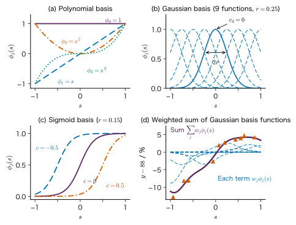
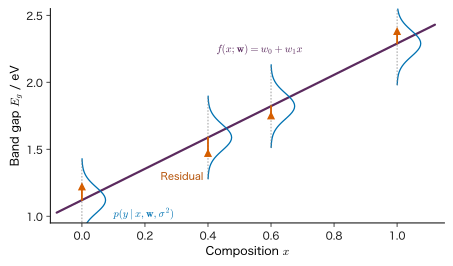
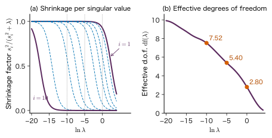
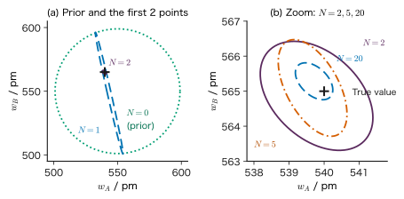
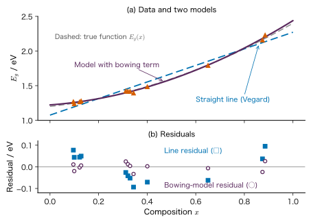
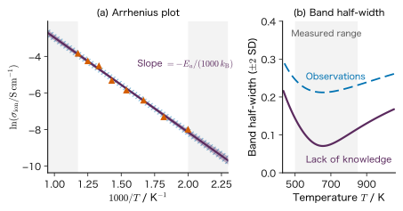

Chapter 8Linear Regression Models — Basis Functions and Least Squares
- The relative density, which bends and levels off as the firing temperature rises, is fitted with a cubic polynomial. Even though we are fitting a curve, why do we still call this “linear” regression?
- When we predict the relative density at a temperature we have not measured, how do we attach to the predicted value an error bar that expresses “how far off it could be”? How narrow does that error bar become as we add more measurements?
- How do we obtain, with uncertainty attached, the “bowing” of the band gap of a mixed crystal and the activation energy of ionic conduction from data?
In Chapter 1, Section 1.4, we fitted a line $f(x;\bm{w})=w_0+w_1x$ to four points and found the $w_0,w_1$ that minimize the sum of squared errors from a system of two linear equations in two unknowns. What should we do, then, when the data are curved? For example, if we line up $x^{2}$ and $x^{3}$ as “columns of inputs” in addition to $x$ and set $f=w_0+w_1x+w_2x^{2}+w_3x^{3}$, we obtain a curve. Although this expresses a curve, it is still a linear expression in the unknowns $w_0,\dots,w_3$, so the way to solve it is exactly the same system of linear equations as in the case of the line. This kind of model, which “transforms the input with arbitrary functions and then combines the results linearly in the coefficients,” is the linear regression model of this chapter.
In this chapter, we first define the basis functions and the design matrix, derive line by line the normal equations that give the solution of least squares, and read them geometrically as “orthogonally projecting the data vector onto a subspace.” Next, we show that if the noise is assumed to follow a Gaussian distribution, least squares coincides with maximum likelihood estimation. In the detailed route, we go on to methods for solving the normal equations in a numerically safe way (QR decomposition, singular value decomposition, and the condition number), ridge regression, which shrinks the coefficients, and Bayesian linear regression, which places a prior distribution on the coefficients, together with its predictive distribution (an error bar that separates the part due to noise from the part due to lack of knowledge). Finally, we reinterpret the distribution of the weights as a distribution over functions, which leads into Chapters 10 and 12.
- You can explain that the linear model with basis functions $f(\bm{x};\bm{w})=\bm{w}^{\tp}\bm{\phi}(\bm{x})$ is “linear in $\bm{w}$,” and can decide whether a given model can be solved by linear regression.
- You can compute the gradient of the squared error componentwise to derive the normal equations $\bm{\Phi}^{\tp}\bm{\Phi}\bm{w}=\bm{\Phi}^{\tp}\bm{y}$, and can explain what it means for the residual to be orthogonal to the columns of the design matrix.
- You can derive least squares and the maximum likelihood estimate of the noise variance from the log-likelihood of Gaussian noise.
- You can compute by hand the fit of a line to three or four points.
- You can explain with the condition number why the normal equations should not be solved with the inverse matrix, and can choose among the Cholesky decomposition, the QR decomposition, and the singular value decomposition.
- You can read the solution of ridge regression as shrinkage along each singular value, derive the posterior distribution of Bayesian linear regression by completing the square, and show that MAP estimation = ridge regression.
- You can split the variance of the predictive distribution into a noise term and a lack-of-knowledge term, and can confirm numerically that the latter grows as we move away from the data.
Sections for the introductory route: 8.1, 8.2, 8.3, 8.4, 8.12. Sections marked “Detailed Route” may be skipped on a first reading.
8.1 Linear Models with Basis Functions — “Linear” Refers to the Coefficients
8.1.1 What we want to do
In Data B of this book, “the band gap of a hypothetical mixed crystal A$_{1-x}$B$_x$C” (synthetic data for teaching purposes, not data of a real material), the band gap bends as a function of the composition $x\in[0,1]$ according to
$$ \begin{aligned}E_g(x)&=(1-x)\times1.20+x\times2.40\\&\quad-0.80\,x(1-x)\ \ \mathrm{eV}\end{aligned} $$If we look at the right-hand side as it stands, $E_g$ is the sum of three “functions of the input,” $1-x$, $x$, and $x(1-x)$, multiplied by the coefficients $1.20$, $2.40$, and $-0.80$, respectively. When the coefficients are not known, determining them from data is regression. If we fix the functions $1-x$, $x$, and $x(1-x)$ in advance, the only unknowns are the three coefficients, and the predicted value is moreover a linear expression in the coefficients.
In this way, we consider a model that transforms an input $\bm{x}$ by several fixed functions $\phi_j(\bm{x})$, multiplies them by coefficients $w_j$, and adds them up. The functions $\phi_j$ may be curved. Figure 8.1 shows three representative kinds of $\phi_j$, and how a curve is produced by adding them with weights.

8.1.2 Definitions and notation
Definition 8.1: Linear model with basis functions
For an input $\bm{x}\in\R^{D}$, $M$ functions $\phi_0(\bm{x}),\dots,\phi_{M-1}(\bm{x})$ fixed in advance are called basis functions. Let $\bm{\phi}(\bm{x})=(\phi_0(\bm{x}),\dots,\phi_{M-1}(\bm{x}))^{\tp}\in\R^{M}$ be the column vector formed by arranging them, and let $\bm{w}=(w_0,\dots,w_{M-1})^{\tp}\in\R^{M}$ be the coefficients (weights). Then
\begin{equation} \begin{aligned}f(\bm{x};\bm{w})&=\sum_{j=0}^{M-1}w_j\phi_j(\bm{x})\\&=\bm{w}^{\tp}\bm{\phi}(\bm{x})\end{aligned} \label{eq:8-model} \end{equation}is called a linear model with basis functions. In most cases we set $\phi_0(\bm{x})=1$ and call $w_0$ the constant term (intercept, bias).
The function $f$ in Eq. \eqref{eq:8-model} may be curved in $\bm{x}$, but it is a linear expression in $\bm{w}$. That is, for two sets of coefficients $\bm{w},\bm{w}'$ and numbers $a,b$, we have $f(\bm{x};a\bm{w}+b\bm{w}')=af(\bm{x};\bm{w})+bf(\bm{x};\bm{w}')$. The “linear” in “linear regression” means linearity in the coefficients $\bm{w}$, not linearity in the input $\bm{x}$. Thanks to this property, the loss in the next section becomes a quadratic function of $\bm{w}$, and its minimum point is found from a system of linear equations.
The basis functions often used in this book are the following three kinds (Figure 8.1(a)–(c)). We write them for a one-dimensional input $s$.
- Polynomial basis: $\phi_j(s)=s^{j}$ ($j=0,1,\dots,d$). For a polynomial of degree $d$ there are $M=d+1$ basis functions (in this book we write the degree as $d$ and the number of basis functions as $M$, keeping the two distinct). Since changing $s$ anywhere changes all of the basis functions, a single data point affects the whole curve.
- Gaussian basis: $\phi_j(s)=\exp\!\bigl[-(s-c_j)^{2}/(2r^{2})\bigr]$. This is a “local” basis function that takes appreciable values only within a range of about the width $r$ around the center $c_j$. Away from the center it approaches 0 (in Section 8.8 we will see that this property has an unexpected effect on the prediction band). Its shape is the same as the density of a Gaussian distribution, but it is not a probability density (it has no normalization constant).
- Sigmoid basis: $\phi_j(s)=\sigma\bigl((s-c_j)/r\bigr)$, $\sigma(a)=1/(1+e^{-a})$. This is a step that switches from 0 to 1 at the location $c_j$ (here $\sigma(\cdot)$ is a function and is distinct from the noise standard deviation $\sigma$). In the neural networks of Chapter 14, even the quantities corresponding to this $c_j$ and $r$ are learned from the data.
Notation: Conventions for data, the design matrix, and loss
We write the data as $\data=\{(\bm{x}_n,y_n)\}_{n=1}^{N}$ and collect the target values as $\bm{y}=(y_1,\dots,y_N)^{\tp}\in\R^{N}$. We abbreviate $\bm{\phi}_n\equiv\bm{\phi}(\bm{x}_n)\in\R^{M}$. In this chapter and in Chapter 9 we write the loss as a sum over the data ($L(\bm{w})=\frac12\sum_n(\cdots)^{2}$). Chapter 7 wrote it with the mean $\frac1N\sum_n$. Either way the minimum point is the same; only the gradient and the Hessian matrix differ by a factor of $N$. However, for the $\lambda$ of ridge regression, whether the loss is written as a sum or as a mean changes the strength of its effect by a factor of $N$ even for the same value (Section 8.6).
Example 8.1: Which models can be solved by linear regression?
Let the parameters be $w_0,w_1,\dots$, and let all other symbols ($\omega$, $k_{\mathrm B}$, and so on) be known constants. Which of the following models take the form of Eq. \eqref{eq:8-model} if the basis functions are chosen appropriately (that is, which are linear in the parameters)? When they do, write down the basis functions.
(a) $f(x)=w_0+w_1x+w_2x\ln x$ (b) $f(x)=w_0e^{-w_1x}$ (c) $f(t)=w_0+w_1\sin\omega t+w_2\cos\omega t$ (d) $f(t)=w_0+w_1\sin(w_2t)$ (e) $\ln\sigma=w_0+w_1/T$ (fit after transforming $\sigma$ to $\ln\sigma$)
Solution. (a) Yes. $\bm{\phi}(x)=(1,\ x,\ x\ln x)^{\tp}$. Although $x\ln x$ is nonlinear in $x$, it is merely multiplied by the coefficient $w_2$, so there is no problem.
(b) No. Since $w_1$ is inside the exponential function, $\partial f/\partial w_1=-w_0xe^{-w_1x}$ depends on $w_0,w_1$. (Taking the logarithm gives the linear form $\ln f=\ln w_0-w_1x$, but that is a different model, in which “noise is added to $\ln f$.” See Sections 8.10 and 8.11.)
(c) Yes. If $\omega$ is known, $\bm{\phi}(t)=(1,\ \sin\omega t,\ \cos\omega t)^{\tp}$. Even $A\sin(\omega t+\theta)$ with unknown amplitude and phase is a linear model with $w_1=A\cos\theta$ and $w_2=A\sin\theta$ if we rewrite it as $A\sin(\omega t+\theta)$ $=A\cos\theta\sin\omega t+A\sin\theta\cos\omega t$.
(d) No. The frequency $w_2$ is inside the $\sin$.
(e) Yes. It suffices to take $\ln\sigma$ as the target value and $(1,\ 1/T)^{\tp}$ as the basis (the Arrhenius equation; Section 8.10).
8.2 Least Squares and the Normal Equations — Orthogonal Projection onto the Column Space
8.2.1 The design matrix and the loss
To write the predicted values for all $N$ data points at once, we form the matrix whose $n$th row is $\bm{\phi}_n^{\tp}$.
Definition 8.2: Design matrix
The $N\times M$ matrix
$$ \bm{\Phi}=\begin{pmatrix}\phi_0(\bm{x}_1)&\cdots&\phi_{M-1}(\bm{x}_1)\\ \vdots&&\vdots\\ \phi_0(\bm{x}_N)&\cdots&\phi_{M-1}(\bm{x}_N)\end{pmatrix}\in\R^{N\times M} $$(with components $\Phi_{nj}=\phi_j(\bm{x}_n)$) is called the design matrix. Its $n$th row is $\bm{\phi}_n^{\tp}$, and its $j$th column is “the basis function $\phi_j$ evaluated at all the data points.”
Using the design matrix, the predicted values for all the data can be written together as $\bm{\Phi}\bm{w}\in\R^{N}$ (its $n$th component is $\bm{\phi}_n^{\tp}\bm{w}=f(\bm{x}_n;\bm{w})$). Least squares is the method that minimizes the sum of squares of the residuals $r_n=y_n-f(\bm{x}_n;\bm{w})$.
\begin{equation} \begin{aligned} L(\bm{w})&=\frac12\sum_{n=1}^{N}\bigl(y_n-\bm{w}^{\tp}\bm{\phi}_n\bigr)^{2}\\ &=\frac12\norm{\bm{y}-\bm{\Phi}\bm{w}}^{2} \end{aligned} \label{eq:8-loss} \end{equation}The coefficient $\frac12$ is there to cancel the 2 on differentiation, and it does not change the minimum point.
8.2.2 Computing the gradient componentwise
Derivation: The normal equations
Written in components, $\bm{w}^{\tp}\bm{\phi}_n=\sum_{j}\Phi_{nj}w_j$, so
$$ L(\bm{w})=\frac12\sum_{n=1}^{N}\Bigl(y_n-\sum_{j=0}^{M-1}\Phi_{nj}w_j\Bigr)^{2}. $$We take the partial derivative with respect to one component $w_k$. By the chain rule, when we differentiate the expression in parentheses with respect to $w_k$, only the term $j=k$ of the sum survives, giving $-\Phi_{nk}$.
$$ \begin{aligned} \pdiff{L}{w_k}&=\frac12\sum_{n=1}^{N}2\Bigl(y_n-\sum_{j}\Phi_{nj}w_j\Bigr)\\ &\qquad\times(-\Phi_{nk})\\ &=-\sum_{n=1}^{N}\Phi_{nk}\,r_n . \end{aligned} $$Here $r_n\equiv y_n-\sum_{j}\Phi_{nj}w_j$ is the residual. The quantity $\sum_n\Phi_{nk}r_n$ is the dot product of the $k$th row of the matrix $\bm{\Phi}^{\tp}$ (the $k$th column of $\bm{\Phi}$) with the residual vector $\bm{r}=\bm{y}-\bm{\Phi}\bm{w}$, that is, $(\bm{\Phi}^{\tp}\bm{r})_k$. Collecting $k=0,\dots,M-1$, we obtain
\begin{equation} \nabla L(\bm{w})=-\bm{\Phi}^{\tp}(\bm{y}-\bm{\Phi}\bm{w}) \label{eq:8-grad} \end{equation}At the minimum point the gradient is $\bm{0}$, so $\bm{\Phi}^{\tp}\bm{y}-\bm{\Phi}^{\tp}\bm{\Phi}\bm{w}=\bm{0}$, and moving a term to the other side gives
\begin{equation} \bm{\Phi}^{\tp}\bm{\Phi}\,\bm{w}=\bm{\Phi}^{\tp}\bm{y} \label{eq:8-normal} \end{equation}Differentiating once more with respect to $w_l$ gives $\dfrac{\partial^{2}L}{\partial w_k\partial w_l}=\sum_n\Phi_{nk}\Phi_{nl}=(\bm{\Phi}^{\tp}\bm{\Phi})_{kl}$, so the Hessian matrix is $\bm{\Phi}^{\tp}\bm{\Phi}$ ($M\times M$). For any $\bm{v}\in\R^{M}$ we have $\bm{v}^{\tp}\bm{\Phi}^{\tp}\bm{\Phi}\bm{v}=\norm{\bm{\Phi}\bm{v}}^{2}\ge0$, so it is positive semidefinite, and $L$ is a convex function (Chapter 7, Section 7.4; detailed route). A convex function is a function for which the line segment joining any two points on the graph never lies below the graph; it has only one valley, and a point where the gradient is 0 is always a minimum point. If the Hessian matrix is positive semidefinite everywhere, the function is convex. Therefore any $\bm{w}$ satisfying Eq. \eqref{eq:8-normal} is a minimum point.
∎
Eq. \eqref{eq:8-normal} is called the normal equations. It consists of $M$ equations in $M$ unknowns. The solution is uniquely determined when $\bm{\Phi}^{\tp}\bm{\Phi}$ is nonsingular, that is, when the $M$ columns of $\bm{\Phi}$ are linearly independent ($\rank\bm{\Phi}=M$). For this, at least $N\ge M$ is necessary; moreover, in cases such as “only the same input was measured” or “some column is a combination of other columns,” the solution is not uniquely determined. Formally we can write $\hat{\bm{w}}=(\bm{\Phi}^{\tp}\bm{\Phi})^{-1}\bm{\Phi}^{\tp}\bm{y}$, but in computation we do not form the inverse matrix (Section 8.5).
8.2.3 The geometric meaning — the residual is orthogonal to the columns
Write the $j$th column of the design matrix as $\bm{c}_j\in\R^{N}$ (the values of the basis function $\phi_j$ evaluated at the $N$ data points, arranged in a column). The vector of predicted values $\bm{\Phi}\bm{w}=w_0\bm{c}_0+\dots+w_{M-1}\bm{c}_{M-1}$ is a linear combination of the columns, so however we choose $\bm{w}$, it lies only in the column space (the subspace of dimension at most $M$ spanned by the column vectors) inside $\R^{N}$. On the other hand, the observation $\bm{y}$ contains noise, so it usually lies outside the column space.
Since $\norm{\bm{y}-\bm{\Phi}\bm{w}}$ is the distance between $\bm{y}$ and the point $\bm{\Phi}\bm{w}$ of the column space, least squares is looking for “the point in the column space closest to $\bm{y}$.” Just as when we drop a perpendicular from a point to a plane, at the closest point $\hat{\bm{y}}=\bm{\Phi}\hat{\bm{w}}$ the residual $\bm{r}=\bm{y}-\hat{\bm{y}}$ is orthogonal to the column space (Figure 8.2). Writing “orthogonal to all the columns” as an equation gives $\bm{c}_j^{\tp}\bm{r}=0$ (for every $j$), or collectively $\bm{\Phi}^{\tp}\bm{r}=\bm{0}$, and this is precisely the normal equations \eqref{eq:8-normal}.
Because of the orthogonality, the Pythagorean theorem $\norm{\bm{y}}^{2}=\norm{\hat{\bm{y}}}^{2}+\norm{\bm{r}}^{2}$ holds (since $\hat{\bm{y}}^{\tp}\bm{r}=\hat{\bm{w}}^{\tp}\bm{\Phi}^{\tp}\bm{r}=0$). Moreover, if the columns of $\bm{\Phi}$ are linearly independent, we can write $\hat{\bm{y}}=\bm{H}\bm{y}$ with $\bm{H}=\bm{\Phi}(\bm{\Phi}^{\tp}\bm{\Phi})^{-1}\bm{\Phi}^{\tp}\in\R^{N\times N}$. $\bm{H}$ is called the hat matrix (the matrix that puts a “hat” on $\bm{y}$), and it also appeared in the shortcut for leave-one-out in Section 6.5 of Chapter 6 (Chapter 6, Section 6.5). The properties of $\bm{H}$ are investigated in Exercise 8.2.
In particular, in a model that includes the constant basis function $\phi_0=1$, the column $\bm{c}_0=(1,\dots,1)^{\tp}$ is orthogonal to the residual, so $\sum_n r_n=0$; that is, the sum of the residuals is 0.
Example 8.2: Checking the orthogonal projection with a line through three points
Fit the line $f(x)=w_0+w_1x$ to the three points $(x,y)=(0,1)$, $(1,1)$, $(2,4)$ (a numerical example for teaching purposes). (1) Write down the design matrix $\bm{\Phi}$ and the normal equations, and find $\hat{\bm{w}}$. (2) Find the residual $\bm{r}$ and verify that $\bm{\Phi}^{\tp}\bm{r}=\bm{0}$. (3) Verify numerically the Pythagorean theorem $\norm{\bm{y}}^{2}=\norm{\hat{\bm{y}}}^{2}+\norm{\bm{r}}^{2}$.
Solution. (1) The basis is $(1,x)$, so
$$ \bm{\Phi}=\begin{pmatrix}1&0\\1&1\\1&2\end{pmatrix},\quad \bm{\Phi}^{\tp}\bm{\Phi}=\begin{pmatrix}3&3\\3&5\end{pmatrix}, $$ $$ \bm{\Phi}^{\tp}\bm{y}=\begin{pmatrix}1+1+4\\0+1+8\end{pmatrix}=\begin{pmatrix}6\\9\end{pmatrix}. $$$3w_0+3w_1=6$, $3w_0+5w_1=9$. Subtracting the upper equation from the lower one gives $2w_1=3$, so $w_1=1.5$. Substituting back into the upper equation gives $w_0=2-1.5=0.5$.
(2) $\hat{\bm{y}}=(0.5,\ 2.0,\ 3.5)^{\tp}$ and $\bm{r}=\bm{y}-\hat{\bm{y}}=(0.5,\ -1.0,\ 0.5)^{\tp}$. The dot product with the first column is $0.5-1.0+0.5=0$, and that with the second column is $0\times0.5+1\times(-1.0)+2\times0.5=0$. Hence $\bm{\Phi}^{\tp}\bm{r}=\bm{0}$.
(3) $\norm{\bm{y}}^{2}=1+1+16=18$, $\norm{\hat{\bm{y}}}^{2}=0.25+4+12.25=16.5$, and $\norm{\bm{r}}^{2}=0.25+1+0.25=1.5$. Since $16.5+1.5=18$, they agree.
8.3 Maximum Likelihood Under Gaussian Noise Is Least Squares
8.3.1 Writing the model probabilistically
We introduced least squares as the procedure of “making the squared error small,” but we have not explained why the error is squared (why not the absolute value?). Here we show that least squares emerges naturally once we state, in terms of probability, how the data are generated.
Regard the inputs $\bm{x}_n$ as given (we do not treat them as random variables), and assume that the target values are generated as
$$ \begin{aligned}&y_n=\bm{w}^{\tp}\bm{\phi}(\bm{x}_n)+\varepsilon_n,\\&\varepsilon_n\sim\Normal(0,\sigma^{2})\ \ (n=1,\dots,N\ \text{independent})\end{aligned} $$Here $\sigma^{2}$ is the variance of the noise, and it has the square of the unit of $y$. This assumption is equivalent to saying, “conditioned on the input $\bm{x}_n$, the coefficients $\bm{w}$, and $\sigma^{2}$, $y_n$ follows a Gaussian distribution with mean $\bm{w}^{\tp}\bm{\phi}_n$ and variance $\sigma^{2}$.”
$$ \begin{aligned}p(y_n\mid\bm{x}_n,\bm{w},\sigma^{2})&=\Normal\bigl(y_n\mid\bm{w}^{\tp}\bm{\phi}_n,\ \sigma^{2}\bigr)\\&=\frac{1}{\sqrt{2\pi\sigma^{2}}}\\&\quad\times\exp\!\left[-\frac{(y_n-\bm{w}^{\tp}\bm{\phi}_n)^{2}}{2\sigma^{2}}\right].\end{aligned} $$What the model predicts is not a single value but a distribution of $y$ for each input (Figure 8.3 in Section 8.4).
8.3.2 Maximizing the log-likelihood
Because the noise terms are independent, the joint distribution of $\bm{y}$ conditioned on the inputs is the product of the densities at the individual points. Viewed as a function of $(\bm{w},\sigma^{2})$, this is the likelihood (Chapter 2, Section 2.7). Taking the logarithm turns the product into a sum.
\begin{equation} \begin{aligned} &\ln p(\bm{y}\mid\bm{X},\bm{w},\sigma^{2})\\ &=\sum_{n=1}^{N}\ln\Normal\bigl(y_n\mid\bm{w}^{\tp}\bm{\phi}_n,\sigma^{2}\bigr)\\ &=-\frac{1}{2\sigma^{2}}\sum_{n=1}^{N}\bigl(y_n-\bm{w}^{\tp}\bm{\phi}_n\bigr)^{2}\\ &\quad-\frac N2\ln(2\pi\sigma^{2})\\ &=-\frac{1}{\sigma^{2}}L(\bm{w})-\frac N2\ln(2\pi\sigma^{2}) \end{aligned} \label{eq:8-loglik} \end{equation}Here $\bm{X}$ collects the inputs $\bm{x}_1,\dots,\bm{x}_N$, and $L(\bm{w})$ is Eq. \eqref{eq:8-loss}. The second line is the sum of $N$ copies of $\ln\Normal=-\frac12\ln(2\pi\sigma^{2})-\frac{(\cdots)^{2}}{2\sigma^{2}}$.
- For $\bm{w}$: Fix $\sigma^{2}\gt0$. Then the second term does not depend on $\bm{w}$, and the first term is $-L(\bm{w})/\sigma^{2}$. Hence maximizing the log-likelihood is the same as minimizing $L(\bm{w})$, and the maximum likelihood estimate $\bm{w}_{\mathrm{ML}}$ is the least-squares solution (the solution of the normal equations \eqref{eq:8-normal}). It does not depend on the value of $\sigma^{2}$.
- For $\sigma^{2}$: Substitute $\bm{w}=\bm{w}_{\mathrm{ML}}$ and differentiate with respect to $\sigma^{2}$ to get $\dfrac{\partial}{\partial\sigma^{2}}\Bigl[-\dfrac{L}{\sigma^{2}}-\dfrac N2\ln\sigma^{2}\Bigr]=\dfrac{L}{\sigma^{4}}-\dfrac{N}{2\sigma^{2}}$. Setting this equal to 0 gives
Thus the maximum likelihood estimate of the noise variance is the mean of the squared residuals, and its square root equals the training RMSE (Chapter 6, Section 6.10).
Why is $\sigma^{2}_{\mathrm{ML}}$ biased toward smaller values?
The coefficients $\bm{w}_{\mathrm{ML}}$ are chosen to minimize the residuals on “the same data,” so the residuals come out smaller than the true noise. When the model contains the true function, the expectation is $\Ex[\sigma^{2}_{\mathrm{ML}}]=\dfrac{N-M}{N}\sigma^{2}$ (derived in Exercise 8.2). Read this as follows: determining $M$ coefficients used up $M$ degrees of freedom of the data, so only $N-M$ degrees of freedom remain in the residuals. For this reason, $\hat{\sigma}^{2}=\frac{1}{N-M}\sum_n r_n^{2}$ is often used as an unbiased estimate. For a model with only a constant ($M=1$), this is the same story as “divide by $N$ or by $N-1$” in Section 4.2 of Chapter 4 (Chapter 4, Section 4.2). If $N=M$, the residuals are 0 and we learn nothing about the magnitude of the noise (the interpolation with $d=9$, $N=10$ in Chapter 6, Section 6.2).
The conclusion of this section is that “least squares is maximum likelihood estimation under the assumption that the noise is Gaussian, has the same variance at every point, and is independent from point to point.” When the assumption fails, least squares is no longer optimal. If outliers are mixed in, use a heavy-tailed distribution (the t distribution of Chapter 4, Section 4.9); if the variance $\sigma_n^{2}$ differs from point to point, use weighted least squares, which minimizes $\sum_n r_n^{2}/\sigma_n^{2}$ (Section 8.10).
Example 8.3: The estimate of the noise variance and the maximum log-likelihood
For the straight-line fit to three points in Example 8.2, (1) find $\sigma^{2}_{\mathrm{ML}}$ and the unbiased estimate $\hat{\sigma}^{2}=\frac{1}{N-M}\sum_n r_n^{2}$. (2) Find the value of the log-likelihood at $\bm{w}=\bm{w}_{\mathrm{ML}}$, $\sigma^{2}=\sigma^{2}_{\mathrm{ML}}$. (3) State why the two values in (1) differ by a factor of three.
Solution. (1) The sum of squared residuals is $\norm{\bm{r}}^{2}=1.5$, so $\sigma^{2}_{\mathrm{ML}}=1.5/3=0.5$ and $\hat{\sigma}^{2}=1.5/(3-2)=1.5$.
(2) In Eq. \eqref{eq:8-loglik}, with $L=\frac12\norm{\bm{r}}^{2}=0.75$ and $\sigma^{2}=0.5$, the first term is $-0.75/0.5=-1.5=-N/2$ (in general, substituting $\sigma^{2}=\sigma^{2}_{\mathrm{ML}}$ makes the first term $-N/2$). The second term is $-\frac32\ln(2\pi\times0.5)=-1.5\ln\pi$ $=-1.5\times1.1447=-1.717$. The total is $-3.217$.
(3) Two coefficients were determined from three points, so only $3-2=1$ degree of freedom remains in the residuals. Dividing by $N$ underestimates the noise by the part that was “absorbed” when the coefficients were adjusted. Dividing by $N-M=1$ corrects this bias on average. If the data are sufficiently more numerous than the coefficients, the difference between the two is small.
8.4 Hand Calculation — Fitting a Line to Four Points
8.4.1 The form of the solution for a line
For the line with basis $(1,x)$, the normal equations are 2×2. The first column of $\bm{\Phi}$ is all 1 and the second column is $x_n$, so
$$ \bm{\Phi}^{\tp}\bm{\Phi}=\begin{pmatrix}N&\sum_n x_n\\ \sum_n x_n&\sum_n x_n^{2}\end{pmatrix}, $$ $$ \bm{\Phi}^{\tp}\bm{y}=\begin{pmatrix}\sum_n y_n\\ \sum_n x_ny_n\end{pmatrix}. $$Dividing the first equation $Nw_0+w_1\sum_n x_n=\sum_n y_n$ by $N$ gives $w_0=\bar{y}-w_1\bar{x}$ ($\bar{x},\bar{y}$ are the means), so the fitted line passes through the point $(\bar{x},\bar{y})$. Substituting this into the second equation and simplifying (Exercise 8.1), we obtain
\begin{equation} w_1=\frac{S_{xy}}{S_{xx}},\qquad w_0=\bar{y}-w_1\bar{x} \label{eq:8-line} \end{equation}Here $S_{xx}=\sum_{n}(x_n-\bar{x})^{2}$ and $S_{xy}=\sum_{n}(x_n-\bar{x})(y_n-\bar{y})$. The slope has the form “covariance ÷ variance of $x$” (Chapter 2, Section 2.5).
Example 8.4: Fitting a line to the band gap of a mixed crystal
The band gap of a hypothetical mixed crystal A$_{1-x}$B$_x$C was measured at four compositions, giving the following values (a numerical example for teaching purposes: values obtained by adding small errors to the true function of data B and rounding).
| Composition $x$ | 0 | 0.4 | 0.6 | 1.0 |
|---|---|---|---|---|
| $E_g$ / eV | 1.22 | 1.47 | 1.75 | 2.38 |
(1) Write down the normal equations and find $w_0,w_1$. (2) Verify with Eq. \eqref{eq:8-line} that the same values result. (3) Find the residuals and verify that $\sum_n r_n=0$ and $\sum_n x_nr_n=0$. (4) Find $\sigma^{2}_{\mathrm{ML}}$ and $\hat{\sigma}^{2}$. (5) What can be read from the pattern of signs of the residuals?
Solution. (1) $N=4$, $\sum x_n=0+0.4+0.6+1.0=2.0$, $\sum x_n^{2}=0+0.16+0.36+1.00=1.52$, $\sum y_n=1.22+1.47+1.75+2.38=6.82$, and $\sum x_ny_n=0+0.588+1.050+2.380$ $=4.018$. The normal equations are
$$ \begin{pmatrix}4&2.0\\2.0&1.52\end{pmatrix}\begin{pmatrix}w_0\\w_1\end{pmatrix}=\begin{pmatrix}6.82\\4.018\end{pmatrix}. $$The determinant is $4\times1.52-2.0^{2}=2.08$. By Cramer's rule,
$$ \begin{aligned} w_0&=\frac{1.52\times6.82-2.0\times4.018}{2.08}\\&=\frac{2.3304}{2.08}=1.1204\ \mathrm{eV},\\ w_1&=\frac{4\times4.018-2.0\times6.82}{2.08}\\&=\frac{2.432}{2.08}=1.1692\ \mathrm{eV}. \end{aligned} $$(2) $\bar{x}=0.5$ and $\bar{y}=1.705$. We have $x_n-\bar{x}=-0.5,-0.1,0.1,0.5$ and $y_n-\bar{y}=-0.485,-0.235,0.045,0.675$. Then $S_{xx}=0.25+0.01+0.01+0.25$ $=0.52$ and $S_{xy}=0.2425+0.0235+0.0045+0.3375$ $=0.608$. So $w_1=0.608/0.52=1.1692$ and $w_0=1.705-1.1692\times0.5=1.1204$. They agree.
(3) The predicted values $\hat{y}_n=1.1204+1.1692x_n$ are $1.1204,\ 1.5881,\ 1.8219,\ 2.2896$. The residuals are $r_n=0.0996,\ -0.1181,\ -0.0719,\ 0.0904$. Their sum is $0.0996-0.1181-0.0719+0.0904$ $=0.0000$. Also $\sum x_nr_n=0-0.0472-0.0431+0.0904$ $=0.0001$ (0 within rounding).
(4) $\sum r_n^{2}=0.00992+0.01394$ $+0.00517+0.00817$ $=0.0372\ \mathrm{eV^{2}}$. Then $\sigma^{2}_{\mathrm{ML}}=0.0372/4=0.0093\ \mathrm{eV^{2}}$ ($\sigma_{\mathrm{ML}}=0.096\ \mathrm{eV}$) and $\hat{\sigma}^{2}=0.0372/2=0.0186\ \mathrm{eV^{2}}$ ($0.136\ \mathrm{eV}$).
(5) In order of $x$, the residuals have the signs +, −, −, +. They are positive at both ends and negative in the middle, so the data bow below the line. Residuals that line up systematically rather than randomly are a sign that the model (a line) cannot represent the form of the true relationship. Adding the basis function $x(1-x)$ lets us represent this bowing (Section 8.10, Exercise 8.3).
Figure 8.3 overlays the line of Example 8.4 with the Gaussian distribution $p(y\mid x,\bm{w},\sigma^{2})$ that the probabilistic model of Section 8.3 places at each input. Least squares moves the line so that the observation points sit “as high as possible on the peak at each position.”

8.5 Numerical Solution — Solving Without Forming the InverseDetailed Route
8.5.1 Why we do not form $(\bm{\Phi}^{\tp}\bm{\Phi})^{-1}$
The solution of the normal equations can be written $\hat{\bm{w}}=(\bm{\Phi}^{\tp}\bm{\Phi})^{-1}\bm{\Phi}^{\tp}\bm{y}$, but on a computer we solve them without forming the inverse matrix. There are two reasons. One is effort: solving the simultaneous equations directly takes less computational cost than forming the inverse and then multiplying by it. The other is precision, and this is the essential one.
A real number on a computer (double precision) has only about 16 significant digits. The degree to which digits are lost in the course of a computation is measured by the condition number.
Definition 8.3: Singular value decomposition and condition number
A matrix $\bm{\Phi}\in\R^{N\times M}$ with $N\ge M$ can be decomposed as
\begin{equation} \bm{\Phi}=\bm{U}\bm{\Sigma}\bm{V}^{\tp}=\sum_{i=1}^{M}s_i\,\bm{u}_i\bm{v}_i^{\tp} \label{eq:8-svd} \end{equation}Here $\bm{U}=(\bm{u}_1,\dots,\bm{u}_M)\in\R^{N\times M}$ has mutually orthogonal columns of length 1 ($\bm{U}^{\tp}\bm{U}=\bm{I}$), $\bm{V}=(\bm{v}_1,\dots,\bm{v}_M)\in\R^{M\times M}$ is an orthogonal matrix ($\bm{V}^{\tp}\bm{V}=\bm{V}\bm{V}^{\tp}=\bm{I}$), $\bm{\Sigma}=\diag(s_1,\dots,s_M)$, and $s_1\ge s_2\ge\dots\ge s_M\ge0$. This is called the singular value decomposition (SVD), and $s_i$ is called a singular value. When $s_M\gt0$,
\begin{equation} \kappa(\bm{\Phi})=\frac{s_1}{s_M}=\frac{s_{\max}}{s_{\min}} \label{eq:8-cond} \end{equation}is called the condition number of $\bm{\Phi}$. If $s_M=0$ (the columns are linearly dependent), we set $\kappa=\infty$.
We defer the proof that the singular value decomposition exists to Section A.4 of Appendix A. All we need here is the following fact. Since $\bm{\Phi}^{\tp}\bm{\Phi}=\bm{V}\bm{\Sigma}\bm{U}^{\tp}\bm{U}\bm{\Sigma}\bm{V}^{\tp}=\bm{V}\bm{\Sigma}^{2}\bm{V}^{\tp}$, the eigenvalues of $\bm{\Phi}^{\tp}\bm{\Phi}$ are $s_i^{2}$ and the eigenvectors are $\bm{v}_i$ (this is the diagonalization of University Mathematics, Chapter 12, Section 12.3). Therefore
$$ \kappa(\bm{\Phi}^{\tp}\bm{\Phi})=\frac{s_1^{2}}{s_M^{2}}=\kappa(\bm{\Phi})^{2}. $$Roughly speaking, when we solve a problem with condition number $\kappa$, the relative error of the input (including rounding error) appears in the answer magnified by at most about a factor of $\kappa$. The unit of rounding in double precision is about $10^{-16}$, so if $\kappa=10^{8}$, only about 8 significant digits of the answer remain. Forming the normal equations squares the condition number, so if we solve a problem with $\kappa(\bm{\Phi})=10^{8}$ by way of $\bm{\Phi}^{\tp}\bm{\Phi}$, almost no digits remain. In the gradient descent of Chapter 7, the condition number determined the speed of convergence (Chapter 7, Section 7.3; the $\kappa$ there is the ratio of the eigenvalues of the Hessian matrix $\propto\bm{\Phi}^{\tp}\bm{\Phi}$, which corresponds to $\kappa(\bm{\Phi})^{2}$ in this section). Here the same quantity determines the precision.
8.5.2 Three ways to solve
- Cholesky decomposition: Decompose the symmetric positive definite matrix as $\bm{\Phi}^{\tp}\bm{\Phi}=\bm{R}^{\tp}\bm{R}$ ($\bm{R}$ is upper triangular), and solve the two triangular systems $\bm{R}^{\tp}\bm{z}=\bm{\Phi}^{\tp}\bm{y}$ and $\bm{R}\bm{w}=\bm{z}$ by substitution. This is the fastest, but because it forms the normal equations, its precision is governed by $\kappa(\bm{\Phi})^{2}$.
- QR decomposition: Decompose $\bm{\Phi}=\bm{Q}\bm{R}$ ($\bm{Q}\in\R^{N\times M}$ satisfies $\bm{Q}^{\tp}\bm{Q}=\bm{I}$, and $\bm{R}\in\R^{M\times M}$ is upper triangular). Substituting into the normal equations gives $\bm{\Phi}^{\tp}\bm{\Phi}=\bm{R}^{\tp}\bm{Q}^{\tp}\bm{Q}\bm{R}=\bm{R}^{\tp}\bm{R}$ and $\bm{\Phi}^{\tp}\bm{y}=\bm{R}^{\tp}\bm{Q}^{\tp}\bm{y}$, so $\bm{R}^{\tp}\bm{R}\bm{w}=\bm{R}^{\tp}\bm{Q}^{\tp}\bm{y}$. If $\bm{R}$ is invertible, multiplying both sides on the left by $(\bm{R}^{\tp})^{-1}$ gives
- and it suffices to solve this by back substitution. Since $\bm{\Phi}^{\tp}\bm{\Phi}$ is never formed, the error stays at about $\kappa(\bm{\Phi})$. This is the standard method, and Simulator 8.1 also uses it (the Householder algorithm).
- Singular value decomposition: Likewise, substitute $\bm{\Phi}^{\tp}\bm{\Phi}=\bm{V}\bm{\Sigma}^{2}\bm{V}^{\tp}$ and $\bm{\Phi}^{\tp}\bm{y}=\bm{V}\bm{\Sigma}\bm{U}^{\tp}\bm{y}$ into the normal equations and multiply on the left by $\bm{V}^{\tp}$ to obtain $\bm{\Sigma}^{2}\bm{V}^{\tp}\bm{w}=\bm{\Sigma}\bm{U}^{\tp}\bm{y}$. If all the $s_i\gt0$, then
- holds. This takes the most effort, but it gives the most information. The equation shows directly that the terms divided by small singular values $s_i$ greatly amplify the noise in the data. When the columns are linearly dependent (some $s_i=0$) or the number of coefficients exceeds the number of data points ($M\gt N$), discarding the terms with $s_i\approx0$ yields, among the infinitely many solutions that minimize the training error, the one with the smallest $\norm{\bm{w}}$ (the minimum-norm solution).
| Method | Approximate computational cost | Quantity governing the precision | Suitable situations |
|---|---|---|---|
| Cholesky (normal equations) | $NM^{2}$ | $\kappa(\bm{\Phi})^{2}$ | $\kappa$ is known to be small, large amounts of data |
| QR decomposition | $2NM^{2}$ | $\kappa(\bm{\Phi})$ | The standard method |
| Singular value decomposition | A few times $NM^{2}$ | $\kappa(\bm{\Phi})$ (small $s_i$ can be discarded) | Columns nearly linearly dependent, $M\gt N$, diagnostics |
8.5.3 Polynomial bases tend to be ill-conditioned
The design matrix of a polynomial, $\Phi_{nj}=x_n^{j}$, is called a Vandermonde matrix, and its condition number grows rapidly as the degree is raised. This is because $x^{8}$ and $x^{9}$ are curves of almost the same shape on $[0,1]$, so the columns become nearly parallel. Moreover, a poor scale of the input makes things worse by orders of magnitude. If we enter the firing temperature in °C as it is, $T=1100$ to $1500$, then $T^{9}$ is a number of the order of $10^{28}$, and the difference in magnitude alone, when it is placed next to the column of $1$s, inflates the condition number.
![A graph with the polynomial degree d (0 to 9) on the horizontal axis and the condition number of the design matrix on a logarithmic scale on the vertical axis. The line with triangles, for monomials in the temperature T in degrees Celsius as it is, reaches 10 to the 39th power at degree 9 and exceeds the dotted line for the double-precision limit at degree 4. The line with circles, for monomials in the normalized s, reaches about 23,000 at degree 9, and the line with squares, for Legendre polynomials, stays at about 350.](figs/ch08_fig8-4.svg)
As Figure 8.4 shows, with monomials in °C as they are, the condition number is $7.5\times10^{16}$ at $d=4$, and in double precision the coefficients no longer have meaningful digits. With $s$ normalized to $[-1,1]$, it stays at $2.33\times10^{4}$ even at $d=9$ (the same value as in Table 6.1 of Chapter 6). The remedies are as follows.
- Standardize the input (subtract the mean and divide by the width). This has the greatest effect and is done almost always.
- Use orthogonal polynomials (the Legendre polynomials $P_0=1$, $P_1=s$, $P_2=\frac12(3s^{2}-1)$, …) as the basis. They are constructed to be mutually orthogonal on $[-1,1]$, so the columns are less likely to become parallel (349 at $d=9$). The set of functions they generate (polynomials of degree at most $d$) is the same as for monomials, so the fitted curve itself does not change. Only the meaning of the coefficients changes.
- Do not raise the degree more than necessary, or suppress the directions of small singular values by the ridge regression of the next section.
Example 8.5: The condition number of a line fitted with the temperature in °C as it is
We measure at two temperatures $T=1200,\ 1400$ °C and fit the line $f=w_0+w_1T$. (1) Find the two eigenvalues of $\bm{\Phi}^{\tp}\bm{\Phi}$, and find the condition numbers $\kappa(\bm{\Phi}^{\tp}\bm{\Phi})$ and $\kappa(\bm{\Phi})$. (2) Find the condition number when the normalized $s=(T-1300)/200=-0.5,\ 0.5$ is used as the input.
Solution. (1) $\bm{\Phi}=\begin{pmatrix}1&1200\\1&1400\end{pmatrix}$ and $\bm{\Phi}^{\tp}\bm{\Phi}=\begin{pmatrix}2&2600\\2600&3400000\end{pmatrix}$ ($1200^{2}+1400^{2}=1440000+1960000$). The eigenvalues of a 2×2 symmetric matrix are given, using the trace $t=3400002$ and the determinant $\delta=2\times3400000-2600^{2}$ $=6800000-6760000=40000$, by $\lambda=\frac12\bigl(t\pm\sqrt{t^{2}-4\delta}\bigr)$. Since $t^{2}\gg4\delta$, the larger one is $\approx t=3.40\times10^{6}$, and the smaller one, from “the product of the two $=\delta$”, is $\approx\delta/t=40000/3400002=0.01176$. Hence $\kappa(\bm{\Phi}^{\tp}\bm{\Phi})\approx3.40\times10^{6}/0.01176$ $=2.89\times10^{8}$ and $\kappa(\bm{\Phi})=\sqrt{2.89\times10^{8}}=1.70\times10^{4}$.
(2) $\bm{\Phi}=\begin{pmatrix}1&-0.5\\1&0.5\end{pmatrix}$ and $\bm{\Phi}^{\tp}\bm{\Phi}=\begin{pmatrix}2&0\\0&0.5\end{pmatrix}$. The eigenvalues are 2 and 0.5, so $\kappa(\bm{\Phi}^{\tp}\bm{\Phi})=4$ and $\kappa(\bm{\Phi})=2$. Although the two points and the line are the same, merely changing the scale of the input changes the condition number by a factor of $10^{4}$. This is because, with °C as it is, the columns $(1,1)^{\tp}$ and $(1200,1400)^{\tp}$ are nearly parallel (and also differ in magnitude by orders of magnitude).
8.6 Ridge Regression — Shrinking Along Each Singular ValueDetailed Route
8.6.1 Derivation of the solution
In Section 6.6 of Chapter 6, we saw that the coefficients of an overfitted polynomial become huge, and we introduced ridge regression, which adds to the loss a penalty on the sum of squares of the coefficients (for the definition and an example of suppressing overfitting, see Chapter 6, Section 6.6). In this section we derive its solution and read off what happens by using the singular value decomposition. The loss is (with $\frac12$ and $\frac{\lambda}{2}$ attached, following the convention of this book)
$$ L_\lambda(\bm{w})=\frac12\norm{\bm{y}-\bm{\Phi}\bm{w}}^{2}+\frac{\lambda}{2}\norm{\bm{w}}^{2},\qquad \lambda\ge0 $$Differentiating the second term with respect to $w_k$ gives $\frac{\lambda}{2}\times2w_k=\lambda w_k$. The gradient of the first term is given by Eq. \eqref{eq:8-grad}, so
$$ \nabla L_\lambda(\bm{w})=-\bm{\Phi}^{\tp}(\bm{y}-\bm{\Phi}\bm{w})+\lambda\bm{w}=\bm{0} $$gives
\begin{equation} (\bm{\Phi}^{\tp}\bm{\Phi}+\lambda\bm{I})\,\bm{w}=\bm{\Phi}^{\tp}\bm{y} \label{eq:8-ridge} \end{equation}(where $\bm{I}$ is the $M\times M$ identity matrix). If $\lambda\gt0$, then for any $\bm{v}\ne\bm{0}$ we have $\bm{v}^{\tp}(\bm{\Phi}^{\tp}\bm{\Phi}+\lambda\bm{I})\bm{v}$ $=\norm{\bm{\Phi}\bm{v}}^{2}+\lambda\norm{\bm{v}}^{2}\gt0$, so the matrix on the left-hand side is positive definite and therefore always invertible. Even if the columns are linearly dependent, and even if the number of coefficients exceeds the number of data points, the solution is uniquely determined.
For computation, the following rewriting is convenient. Form the vertically stacked matrix and vector
\begin{equation} \tilde{\bm{\Phi}}=\begin{pmatrix}\bm{\Phi}\\ \sqrt{\lambda}\,\bm{I}\end{pmatrix},\qquad \tilde{\bm{y}}=\begin{pmatrix}\bm{y}\\ \bm{0}\end{pmatrix} \label{eq:8-aug} \end{equation}(with $\tilde{\bm{\Phi}}\in\R^{(N+M)\times M}$ and $\tilde{\bm{y}}\in\R^{N+M}$). Then
$$ \begin{aligned}\norm{\tilde{\bm{y}}-\tilde{\bm{\Phi}}\bm{w}}^{2}&=\norm{\bm{y}-\bm{\Phi}\bm{w}}^{2}+\norm{\bm{0}-\sqrt{\lambda}\bm{w}}^{2}\\&=\norm{\bm{y}-\bm{\Phi}\bm{w}}^{2}+\lambda\norm{\bm{w}}^{2}\\&=2L_\lambda(\bm{w}).\end{aligned} $$In other words, ridge regression is “least squares with $M$ extra virtual observations $0=\sqrt{\lambda}\,w_j$”, and it can be solved directly by the QR decomposition of $\tilde{\bm{\Phi}}$ (Eq. \eqref{eq:8-qr}). This is what “QR decomposition of [Φ; √λ I]” in Simulator 8.1 refers to.
8.6.2 Shrinkage along each singular value
Substitute $\bm{\Phi}^{\tp}\bm{\Phi}=\bm{V}\bm{\Sigma}^{2}\bm{V}^{\tp}$ and $\lambda\bm{I}=\lambda\bm{V}\bm{V}^{\tp}$ into Eq. \eqref{eq:8-ridge}. The left-hand side becomes $\bm{V}(\bm{\Sigma}^{2}+\lambda\bm{I})\bm{V}^{\tp}\bm{w}$ and the right-hand side becomes $\bm{V}\bm{\Sigma}\bm{U}^{\tp}\bm{y}$. Multiplying by $\bm{V}^{\tp}$ from the left and dividing by the diagonal matrix $\bm{\Sigma}^{2}+\lambda\bm{I}$, we obtain
\begin{equation} \begin{aligned} \hat{\bm{w}}_\lambda&=\sum_{i=1}^{M}\frac{s_i}{s_i^{2}+\lambda}\,(\bm{u}_i^{\tp}\bm{y})\,\bm{v}_i\\ &=\sum_{i=1}^{M}\underbrace{\frac{s_i^{2}}{s_i^{2}+\lambda}}_{\text{shrinkage factor}}\cdot\frac{\bm{u}_i^{\tp}\bm{y}}{s_i}\,\bm{v}_i \end{aligned} \label{eq:8-shrink} \end{equation}Comparing with the least-squares solution in Eq. \eqref{eq:8-svd-sol}, we see that the component in the direction $\bm{v}_i$ is shrunk by the factor $s_i^{2}/(s_i^{2}+\lambda)$. Directions with $s_i^{2}\gg\lambda$ (directions in which the data determine the coefficients well) are barely shrunk, while directions with $s_i^{2}\ll\lambda$ (directions in which the information from the data is weak and the noise was being amplified by a factor of $1/s_i$) are shrunk to almost 0. The “shrinkage factor $\sum_nx_n^{2}/(\sum_nx_n^{2}+\lambda)$ for a single coefficient” that we saw in Example 6.6 of Chapter 6 is a special case of this formula, because $s_1^{2}=\sum_n x_n^{2}$ when $M=1$.
The sum of the factors
\begin{equation} \mathrm{df}(\lambda)=\sum_{i=1}^{M}\frac{s_i^{2}}{s_i^{2}+\lambda} \label{eq:8-df} \end{equation}is called the effective degrees of freedom. It equals $M$ (the number of coefficients) at $\lambda=0$ and tends to 0 as $\lambda\to\infty$. It expresses, as a continuous quantity, “how many coefficients are effectively being determined from the data.” Figure 8.5 shows the factors and the effective degrees of freedom when a polynomial of degree $d=9$ ($M=10$) is fitted to the same 10 points as in Chapter 6. The singular values are spread over more than four orders of magnitude, from a maximum of 3.52 to a minimum of $1.51\times10^{-4}$ (the ratio is the condition number $2.33\times10^{4}$), and at $\ln\lambda=-10,-5,0$ the effective degrees of freedom are 7.52, 5.40, and 2.80.

8.6.3 Do not penalize the constant term
In practice, the constant term $w_0$ (the coefficient of $\phi_0=1$) is often not penalized. If $w_0$ were penalized, merely adding a constant to the target values (that is, changing the units or the choice of baseline) would change the shape of the fit. Consider the loss that does not penalize the constant term,
$$ \begin{aligned}L(w_0,\tilde{\bm{w}})&=\frac12\sum_{n=1}^{N}\bigl(y_n-w_0-\tilde{\bm{w}}^{\tp}\tilde{\bm{\phi}}_n\bigr)^{2}\\&\quad+\frac{\lambda}{2}\norm{\tilde{\bm{w}}}^{2}\end{aligned} $$(where $\tilde{\bm{\phi}}_n\in\R^{M-1}$ are the basis functions other than the constant and $\tilde{\bm{w}}$ are their coefficients). Differentiating with respect to $w_0$ and setting the result to 0 gives $-\sum_n(y_n-w_0-\tilde{\bm{w}}^{\tp}\tilde{\bm{\phi}}_n)=0$, that is,
\begin{equation} w_0=\bar{y}-\tilde{\bm{w}}^{\tp}\bar{\bm{\phi}} \label{eq:8-center} \end{equation}Here $\bar{y}=\frac1N\sum_n y_n$ and $\bar{\bm{\phi}}=\frac1N\sum_n\tilde{\bm{\phi}}_n$. Substituting this back into the loss, the residual becomes $(y_n-\bar{y})-\tilde{\bm{w}}^{\tp}(\tilde{\bm{\phi}}_n-\bar{\bm{\phi}})$. In other words, we subtract the respective means from the target values and from each basis function (centering), solve ridge regression without a constant term, and finally recover $w_0$ with Eq. \eqref{eq:8-center}. As $\lambda\to\infty$ we have $\tilde{\bm{w}}\to\bm{0}$, and the fit approaches the horizontal line at the data mean $\bar{y}$.
Notation: Simplification in Simulator 8.1
Simulator 8.1 (the same simulator as Simulator 6.1 of Chapter 6) subtracts a fixed baseline value of 88 % from the target values and, for the resulting $y_n-88\ \%$, applies the penalty to all coefficients, including the constant term $w_0$. For this reason, when $\lambda$ is made large, the fit approaches the horizontal line at 88 %, not at the data mean. The result therefore differs somewhat from the “do not penalize the constant term” method above where $\lambda$ is large. Because the baseline value of 88 % is close to the data mean, the difference is small.
Example 8.6: Ridge regression with orthogonal columns
For four points, the design matrix and the target values are
$$ \bm{\Phi}=\begin{pmatrix}1&-0.3\\1&-0.1\\1&0.1\\1&0.3\end{pmatrix},\qquad \bm{y}=\begin{pmatrix}1.0\\1.4\\1.5\\2.1\end{pmatrix} $$(a numerical example for teaching purposes; the second column is the centered input). (1) Find the least-squares solution. (2) For ridge regression with $\lambda=0.2$ penalizing all coefficients, find the solution, the shrinkage factor of each coefficient, and the effective degrees of freedom. (3) Find the solution when $w_0$ is not penalized, and compare it with (2).
Solution. (1) The dot product of the two columns is $-0.3-0.1+0.1+0.3=0$, so they are orthogonal. We have $\bm{\Phi}^{\tp}\bm{\Phi}=\diag(4,\ 0.2)$ (since $0.09+0.01+0.01+0.09=0.2$) and $\bm{\Phi}^{\tp}\bm{y}=(6.0,\ 0.34)^{\tp}$ (since $-0.30-0.14+0.15+0.63=0.34$). Because the matrix is diagonal, we divide component by component: $\hat{w}_0=6.0/4=1.5$ and $\hat{w}_1=0.34/0.2=1.7$.
(2) Since $(\bm{\Phi}^{\tp}\bm{\Phi}+0.2\bm{I})=\diag(4.2,\ 0.4)$, we get $w_0=6.0/4.2=1.4286$ and $w_1=0.34/0.4=0.85$. The factors are $4/4.2=0.952$ and $0.2/0.4=0.5$ (when the columns are orthogonal, the $\bm{v}_i$ point along the coordinate axes, and $s_i^{2}$ are the diagonal entries of $\bm{\Phi}^{\tp}\bm{\Phi}$). The effective degrees of freedom is $0.952+0.5=1.452$. The coefficient $w_0$, for which the information in the data is strong ($s^{2}=4$), is barely shrunk, whereas the slope $w_1$, for which the information is weak ($s^{2}=0.2$), is halved.
(3) If $w_0$ is not penalized, Eq. \eqref{eq:8-center} gives $w_0=\bar{y}-w_1\bar{\phi}_1=1.5-w_1\times0=1.5$ (because the column is centered). $w_1$ is the same $0.85$ as in (2). The $w_0=1.4286$ in (2) was pulled from the data mean 1.5 toward 0. If all the target values are shifted by $+10$, then $w_0$ in (3) shifts by exactly that amount, to 11.5, but $w_0$ in (2) becomes $46/4.2=10.95$, so the shift is not 10.
Simulator 8.1: Polynomial regression and regularization — solution methods and shrinkage of the coefficients
This simulator fits a polynomial to the training data of data A and lets you check how it is solved (QR decomposition, minimum-norm solution, and QR decomposition for ridge), the condition number of the design matrix, the breakdown of the loss, and the magnitude of the coefficients (it is the same screen as Simulator 6.1 of Chapter 6; in Chapter 6 we looked at overfitting, and here we focus on how to solve and on shrinkage). The target value is $y-88\ \%$, and the penalty is applied to all coefficients including the constant term $w_0$ (Section 8.6.3).
Open in a separate window at full size →
Operate and Observe
- With the defaults right after opening (number of training data points $N=10$, noise standard deviation 1.0 %, polynomial degree $d=3$, “no regularization (λ = 0, least squares)” checked, random-number seed 20261112), look at the readout on the right → the solution method is “QR decomposition (least squares),” the condition number of $\bm{\Phi}$ is 9.35, and ‖w‖ is 12.5. Under “Putting the current numbers into the formula” below, it shows $L(\bm{w})=\frac12\times7.32+\frac{0}{2}\times157=3.66$. Compare with Eqs. \eqref{eq:8-loss} and \eqref{eq:8-qr}.
- Set the “polynomial degree d” to 9 → the condition number rises to 23300 ($2.33\times10^{4}$), and ‖w‖ becomes 4450. Set it further to 10 → the solution method changes to “SVD minimum-norm solution,” the condition number becomes “∞ (not enough columns),” and a notice appears that the number of coefficients exceeds the number of data points. Compare with the minimum-norm solution in Eq. \eqref{eq:8-svd-sol}.
- With $d=10$ unchanged, uncheck “no regularization” (the “regularization strength ln λ” is the default −5.0) → the solution method becomes “QR decomposition of [Φ; √λ I],” the notice disappears, and the solution is uniquely determined (the displayed condition number is that of $\bm{\Phi}$ itself, so it remains ∞). Training RMSE is 0.742 %, validation RMSE is 1.32 %, ‖w‖ is 16.1, and $L(\bm{w})=\frac12\times5.50+\frac{0.00674}{2}\times260$ $=3.63$. Compare with Eqs. \eqref{eq:8-ridge} and \eqref{eq:8-aug}.
- Return the degree to 9 and move ln λ through −10, −5, and 0 → ‖w‖ decreases monotonically as 126, 16.0, and 6.76. Place this alongside the effective degrees of freedom 7.52, 5.40, and 2.80 in Figure 8.5, and compare with the shrinkage in Eq. \eqref{eq:8-shrink}. At ln λ = 0, $L(\bm{w})=\frac12\times28.1+\frac{1.00}{2}\times45.7=36.9$. If you have changed the seed, use “Reset to defaults” to return it to 20261112.
Questions After Operating
- In steps 2–3, when $d=10$ the solution is not uniquely determined at $\lambda=0$, yet it is determined once $\lambda\gt0$. Why?
Sample answers
For $d=10$ there are $M=11$ coefficients and only 10 data points, so $\rank\bm{\Phi}\le10\lt11$, and $\bm{\Phi}^{\tp}\bm{\Phi}$ (11×11) is not invertible. Since there are infinitely many solutions with zero training error, the simulator uses the singular value decomposition to choose the one with the smallest $\norm{\bm{w}}$ and displays it. For $\lambda\gt0$, we have $\bm{v}^{\tp}(\bm{\Phi}^{\tp}\bm{\Phi}+\lambda\bm{I})\bm{v}$ $=\norm{\bm{\Phi}\bm{v}}^{2}+\lambda\norm{\bm{v}}^{2}\gt0$, so the matrix on the left-hand side becomes positive definite and exactly one solution is determined. One may also view the stacked $\tilde{\bm{\Phi}}$ as having 21 rows and 11 columns, with linearly independent columns.
- In step 4, at ln λ = 0, what are the two terms of the loss (the data term and the penalty term)? Why does the curve at this point become too flat?
Sample answers
The data term is $\frac12\times28.1=14.0$ and the penalty term is $\frac12\times1.00\times45.7=22.9$, so the penalty is larger. Even if we enlarge the coefficients slightly to improve the fit, the penalty grows by more, so the coefficients are pulled toward 0 (the curve is pulled toward the horizontal line at 88 %). The effective degrees of freedom is 2.80, so only a little under three coefficients are effectively determined from the data. In the language of Chapter 6, this is a state of large bias (underfitting).
- In step 4, why does ‖w‖ always become smaller as $\lambda$ is increased?
Sample answers
In Eq. \eqref{eq:8-shrink}, the $\bm{v}_i$ are mutually orthogonal vectors of length 1, so $\norm{\hat{\bm{w}}_\lambda}^{2}=\sum_i\Bigl(\dfrac{s_i}{s_i^{2}+\lambda}\Bigr)^{2}(\bm{u}_i^{\tp}\bm{y})^{2}$. Each term's $s_i/(s_i^{2}+\lambda)$ decreases monotonically in $\lambda$, so the sum also decreases monotonically (Exercise 8.5).
8.7 Bayesian Linear Regression — The Posterior Distribution of the CoefficientsDetailed Route
8.7.1 Setup
Least squares and ridge regression both answer with a single set of values $\hat{\bm{w}}$ for the coefficients. When the data are scarce, however, the coefficients could take many different values. Bayesian linear regression does for the coefficients $\bm{w}\in\R^{M}$ of a linear model what we did in Chapter 4, where we expressed our uncertainty about a parameter by a posterior distribution. We make the following two assumptions.
- Likelihood (Section 8.3): conditioned on the inputs $\bm{X}$ and on $\bm{w}$, $\bm{y}\sim\Normal(\bm{\Phi}\bm{w},\ \sigma^{2}\bm{I}_N)$. That is, $p(\bm{y}\mid\bm{X},\bm{w})=\prod_n\Normal(y_n\mid\bm{w}^{\tp}\bm{\phi}_n,\sigma^{2})$.
- Prior distribution: $p(\bm{w})=\Normal(\bm{w}\mid\bm{0},\ \sigma_w^{2}\bm{I}_M)$. We think of each coefficient as lying within a range with mean 0 and standard deviation $\sigma_w$.
The noise variance $\sigma^{2}$ and the prior variance $\sigma_w^{2}$ are given as known values (a method for determining them from the data is described in the Advanced Topic box at the end of this section). Since the inputs $\bm{X}$ are always among the conditions, we abbreviate the posterior distribution as $p(\bm{w}\mid\data)$ from here on.
8.7.2 Derivation by Completing the Square
Derivation: The posterior distribution $p(\bm{w}\mid\data)$
By Bayes's theorem, $p(\bm{w}\mid\data)\propto p(\bm{y}\mid\bm{X},\bm{w})\,p(\bm{w})$. Take the logarithm and collect the terms that do not depend on $\bm{w}$ into “const”.
$$ \begin{aligned}\ln p(\bm{w}\mid\data)&=-\frac{1}{2\sigma^{2}}(\bm{y}-\bm{\Phi}\bm{w})^{\tp}(\bm{y}-\bm{\Phi}\bm{w})\\&\quad-\frac{1}{2\sigma_w^{2}}\bm{w}^{\tp}\bm{w}+\text{const}.\end{aligned} $$Expand the product in the first term. Since $\bm{y}^{\tp}\bm{\Phi}\bm{w}$ is a scalar, it is unchanged by transposition and equals $\bm{w}^{\tp}\bm{\Phi}^{\tp}\bm{y}$, so
$$ \begin{aligned}&(\bm{y}-\bm{\Phi}\bm{w})^{\tp}(\bm{y}-\bm{\Phi}\bm{w})\\&=\bm{y}^{\tp}\bm{y}-2\bm{w}^{\tp}\bm{\Phi}^{\tp}\bm{y}+\bm{w}^{\tp}\bm{\Phi}^{\tp}\bm{\Phi}\bm{w}.\end{aligned} $$Since $\bm{y}^{\tp}\bm{y}$ does not depend on $\bm{w}$, we put it into const, and arrange the terms separately as the quadratic terms and the linear terms in $\bm{w}$.
\begin{equation} \begin{aligned} &\ln p(\bm{w}\mid\data)\\ &=-\frac12\bm{w}^{\tp}\Bigl(\frac{\bm{I}}{\sigma_w^{2}}\\&\qquad\quad+\frac{\bm{\Phi}^{\tp}\bm{\Phi}}{\sigma^{2}}\Bigr)\bm{w}\\ &\quad+\bm{w}^{\tp}\Bigl(\frac{\bm{\Phi}^{\tp}\bm{y}}{\sigma^{2}}\Bigr)+\text{const}. \end{aligned} \label{eq:8-logpost} \end{equation}On the other hand, if we expand the logarithm of the multivariate Gaussian distribution $\Normal(\bm{w}\mid\bm{m},\bm{S})$ (Chapter 3, Section 3.6) in the same way, then using the symmetry of $\bm{S}^{-1}$ we obtain
$$ \begin{aligned}&-\frac12(\bm{w}-\bm{m})^{\tp}\bm{S}^{-1}(\bm{w}-\bm{m})+\text{const}\\&=-\frac12\bm{w}^{\tp}\bm{S}^{-1}\bm{w}+\bm{w}^{\tp}\bm{S}^{-1}\bm{m}+\text{const}'.\end{aligned} $$Compare the quadratic and linear terms of Eq. \eqref{eq:8-logpost} with this expression (completing the square). We can read off $\bm{S}^{-1}$ from the quadratic term and $\bm{S}^{-1}\bm{m}$ from the linear term. Since the matrix in the quadratic term is positive definite, the posterior distribution is a Gaussian distribution.
∎
We summarize the result.
\begin{equation} \begin{aligned} p(\bm{w}\mid\data)&=\Normal(\bm{w}\mid\bm{m}_N,\ \bm{S}_N),\\ \bm{S}_N^{-1}&=\sigma_w^{-2}\bm{I}+\sigma^{-2}\bm{\Phi}^{\tp}\bm{\Phi},\\ \bm{m}_N&=\sigma^{-2}\bm{S}_N\bm{\Phi}^{\tp}\bm{y}. \end{aligned} \label{eq:8-post} \end{equation}Here $\bm{S}_N\in\R^{M\times M}$ is the posterior covariance matrix of the coefficients and $\bm{m}_N\in\R^{M}$ is the posterior mean. $\bm{S}_N^{-1}$ (the precision matrix) is the sum of “the precision of the prior distribution, $\sigma_w^{-2}\bm{I}$” and “the precision of the data, $\sigma^{-2}\bm{\Phi}^{\tp}\bm{\Phi}$”. The one-variable formula $1/\sigma_N^{2}=1/\sigma_0^{2}+N/\sigma^{2}$ of Chapter 4, Section 4.6 is the special case $M=1$, $\phi(x)=1$ ($\bm{\Phi}^{\tp}\bm{\Phi}=N$) (Chapter 4, Section 4.6).
8.7.3 MAP estimation is ridge regression
Since a Gaussian distribution has its maximum density at its mean, the MAP estimate is $\bm{m}_N$. Multiplying the third line of Eq. \eqref{eq:8-post} by $\bm{S}_N^{-1}$ from the left and then by $\sigma^{2}$, we obtain
$$ \begin{aligned}&\sigma^{2}\bm{S}_N^{-1}\bm{m}_N=\bm{\Phi}^{\tp}\bm{y}\\&\Longrightarrow\ \Bigl(\bm{\Phi}^{\tp}\bm{\Phi}+\frac{\sigma^{2}}{\sigma_w^{2}}\bm{I}\Bigr)\bm{m}_N=\bm{\Phi}^{\tp}\bm{y}.\end{aligned} $$This is the ridge regression equation \eqref{eq:8-ridge} with
\begin{equation} \lambda=\frac{\sigma^{2}}{\sigma_w^{2}} \label{eq:8-lambda} \end{equation}. MAP estimation with a Gaussian prior distribution is the same as ridge regression (this is the proof announced in Chapter 6, Section 6.6 and Chapter 7, Section 7.8). The quantity $\lambda$ is the ratio of “the magnitude of the noise” to “the magnitude the coefficients can take”; the larger the noise, or the more strongly we believe that the coefficients are small, the more strongly the coefficients are shrunk.
Let us also check two limiting cases.
- $\sigma_w\to\infty$ (the prior distribution is almost flat): $\bm{S}_N\to\sigma^{2}(\bm{\Phi}^{\tp}\bm{\Phi})^{-1}$ and $\bm{m}_N\to$ the least-squares solution. The matrix $\sigma^{2}(\bm{\Phi}^{\tp}\bm{\Phi})^{-1}$ is the same as what is known in statistics as the covariance matrix of the least-squares estimate.
- No data ($N=0$): $\bm{S}_N=\sigma_w^{2}\bm{I}$ and $\bm{m}_N=\bm{0}$, so we return to the prior distribution.
8.7.4 A prior distribution with nonzero mean, and sequential updating
Even if we take a general prior distribution $\Normal(\bm{w}\mid\bm{m}_0,\bm{S}_0)$, the same completing of the square gives
\begin{equation} \begin{aligned} \bm{S}_N^{-1}&=\bm{S}_0^{-1}+\sigma^{-2}\bm{\Phi}^{\tp}\bm{\Phi},\\ \bm{m}_N&=\bm{S}_N\bigl(\bm{S}_0^{-1}\bm{m}_0\\&\qquad+\sigma^{-2}\bm{\Phi}^{\tp}\bm{y}\bigr) \end{aligned} \label{eq:8-post-general} \end{equation}(with $\bm{m}_0=\bm{0}$ and $\bm{S}_0=\sigma_w^{2}\bm{I}$ we return to Eq. \eqref{eq:8-post}). Since $\bm{\Phi}^{\tp}\bm{\Phi}=\sum_n\bm{\phi}_n\bm{\phi}_n^{\tp}$ and $\bm{\Phi}^{\tp}\bm{y}=\sum_n\bm{\phi}_ny_n$ split into sums over the data, repeating the update “make the previous posterior distribution the next prior distribution” while adding the data one point at a time gives the same result as using all of the data at once (Exercise 8.6). This is the same property as the sequential updating of Chapter 4.
Figure 8.6 shows this update in action. We assume that the lattice constant of a hypothetical mixed crystal A$_{1-x}$B$_x$C varies linearly with the composition (Vegard's law; Section 8.10), and we place the model $a(x)=(1-x)w_A+xw_B$. If we take the basis functions to be $(1-x,\ x)$, the coefficients $w_A,w_B$ become directly the lattice constants of the end members AC and BC. For the prior distribution we say “both are about 550 ± 20 pm” and take $\bm{m}_0=(550,550)^{\tp}$ pm and $\bm{S}_0=20^{2}\bm{I}$ pm$^{2}$. When the first point ($x=0.18$) is observed, the posterior distribution becomes a long, thin ellipse. This is because a single point tells us only “approximately what $0.82w_A+0.18w_B$ is”, while the direction orthogonal to that combination remains as wide as the prior distribution. The second point ($x=0.84$) fixes both directions, and as points are added the ellipse shrinks around the true value (for $N=20$ the standard deviation is about 0.22 pm for each of $w_A,w_B$).

Example 8.7: Bayesian linear regression with one coefficient
To the same three points as in Example 6.6 of Chapter 6, $(x,y)=(1,1.1)$, $(2,1.9)$, $(3,3.2)$, fit the model $f(x)=wx$ through the origin ($M=1$, $\phi(x)=x$). Let the noise standard deviation be $\sigma=1$ and the prior distribution be $\Normal(w\mid0,\sigma_w^{2})$ with $\sigma_w^{2}=0.5$. (1) Find the posterior variance $S_N$ and mean $m_N$. (2) Find the corresponding ridge $\lambda$ and compare it with the result of Example 6.6. (3) Find the 95 % credible interval for $w$.
Solution. (1) $\bm{\Phi}^{\tp}\bm{\Phi}=\sum_nx_n^{2}=1+4+9=14$ and $\bm{\Phi}^{\tp}\bm{y}=\sum_nx_ny_n=1.1+3.8+9.6=14.5$. By Eq. \eqref{eq:8-post}, $S_N^{-1}=1/0.5+14/1=16$, so $S_N=1/16=0.0625$. Then $m_N=S_N\times14.5/1=14.5/16=0.906$.
(2) $\lambda=\sigma^{2}/\sigma_w^{2}=1/0.5=2$. In Example 6.6 the ridge solution for $\lambda=2$ is $14.5/(14+2)=0.906$, which agrees with $m_N$.
(3) The posterior distribution is $\Normal(w\mid0.906,\ 0.25^{2})$ ($\sqrt{0.0625}=0.25$). The 95 % credible interval is $0.906\pm1.96\times0.25=[0.416,\ 1.396]$. Ridge regression answers with only the single point 0.906, whereas Bayesian linear regression goes further and tells us that “there is a spread of about 0.4–1.4”.
Advanced Topic: Determining $\sigma^{2}$ and $\sigma_w^{2}$ from the data (marginal likelihood)
So far we have treated $\sigma^{2}$ and $\sigma_w^{2}$ as given. To choose them from the data, there is a method that maximizes the marginal likelihood (also called the evidence) $p(\bm{y}\mid\bm{X},\sigma^{2},\sigma_w^{2})=\int p(\bm{y}\mid\bm{X},\bm{w})p(\bm{w})\,\dd\bm{w}$, in which $\bm{w}$ has been integrated out. We can find its form without carrying out the integral. We have $\bm{y}=\bm{\Phi}\bm{w}+\bm{\varepsilon}$, where $\bm{w}\sim\Normal(\bm{0},\sigma_w^{2}\bm{I})$ and $\bm{\varepsilon}\sim\Normal(\bm{0},\sigma^{2}\bm{I})$ are independent Gaussian distributions, so their linear combination $\bm{y}$ is also Gaussian, with mean $\bm{0}$ and covariance $\Ex[\bm{y}\bm{y}^{\tp}]=\bm{\Phi}\Ex[\bm{w}\bm{w}^{\tp}]\bm{\Phi}^{\tp}+\Ex[\bm{\varepsilon}\bm{\varepsilon}^{\tp}]$ $=\sigma_w^{2}\bm{\Phi}\bm{\Phi}^{\tp}+\sigma^{2}\bm{I}\equiv\bm{C}$ ($N\times N$; the cross terms vanish because $\bm{w}$ and $\bm{\varepsilon}$ are independent with mean 0). Therefore
$$ \begin{aligned}&\ln p(\bm{y}\mid\bm{X},\sigma^{2},\sigma_w^{2})\\&=-\frac12\bm{y}^{\tp}\bm{C}^{-1}\bm{y}-\frac12\ln\abs{\bm{C}}-\frac N2\ln2\pi .\end{aligned} $$The first term is the data fit, and the second term acts as a penalty on a model that is too broad and can explain anything. MacKay (1992) discussed in detail the method of choosing the $\sigma^{2},\sigma_w^{2}$ that maximize this quantity, for linear models built from basis functions (interpolation) (maximization of the marginal likelihood, also called evidence maximization). An expression of the same form appears in the choice of the hyperparameters of a Gaussian process in Chapter 12, Section 12.7. Simulator 8.2 does not perform this maximization (the user supplies $\sigma,\sigma_w$).
8.8 The Predictive Distribution — Two Widths from Noise and Lack of KnowledgeDetailed Route
8.8.1 Derivation
We want to predict the measured value $y_*$ at a new input $\bm{x}_*$. Write $\bm{\phi}_*\equiv\bm{\phi}(\bm{x}_*)\in\R^{M}$. In the Bayesian viewpoint, we do not fix the coefficients at a single value; instead we use a prediction averaged over the posterior distribution.
$$ p(y_*\mid\bm{x}_*,\data)=\int p(y_*\mid\bm{x}_*,\bm{w})\,p(\bm{w}\mid\data)\,\dd\bm{w}. $$This integral can be obtained without computing it if we think of it as a sum of random variables, as follows.
- The value of the latent function $f_*=\bm{\phi}_*^{\tp}\bm{w}$ is a linear combination of $\bm{w}\sim\Normal(\bm{m}_N,\bm{S}_N)$, which follows a Gaussian distribution, and therefore itself follows a Gaussian distribution (Chapter 3, Section 3.6). Its mean is $\Ex[f_*]=\bm{\phi}_*^{\tp}\Ex[\bm{w}]=\bm{\phi}_*^{\tp}\bm{m}_N$. Its variance is $$ \begin{aligned}\Var[f_*]&=\Ex\bigl[(\bm{\phi}_*^{\tp}(\bm{w}-\bm{m}_N))^{2}\bigr]\\&=\bm{\phi}_*^{\tp}\Ex\bigl[(\bm{w}-\bm{m}_N)(\bm{w}-\bm{m}_N)^{\tp}\bigr]\bm{\phi}_*\\&=\bm{\phi}_*^{\tp}\bm{S}_N\bm{\phi}_*.\end{aligned} $$
- The measured value is $y_*=f_*+\varepsilon_*$, and the noise of the new measurement, $\varepsilon_*\sim\Normal(0,\sigma^{2})$, is independent of $\bm{w}$ (which was learned from the training data). The sum of independent Gaussian random variables is Gaussian, and its mean and variance are the sums of the respective means and variances.
From the above,
The predictive variance is the sum of two terms.
- $\sigma^{2}$ (noise): the part by which the value scatters even if we measure again under the same conditions. It does not decrease when we increase the data (the aleatoric uncertainty of Chapter 4, Section 4.8).
- $\bm{\phi}_*^{\tp}\bm{S}_N\bm{\phi}_*$ (lack of knowledge): the part due to not yet knowing the coefficients exactly. As the data increase, $\sigma^{-2}\bm{\phi}_n\bm{\phi}_n^{\tp}$ is added to $\bm{S}_N^{-1}$, so this term becomes small where there are data (the epistemic uncertainty).
In the figures and simulators of this book, we distinguish two bands: the prediction mean $\pm2\sqrt{\bm{\phi}_*^{\tp}\bm{S}_N\bm{\phi}_*}$ is called the lack-of-knowledge band (the band for the latent function $f_*$), and the prediction mean $\pm2\sqrt{\sigma^{2}+\bm{\phi}_*^{\tp}\bm{S}_N\bm{\phi}_*}$ is called the observed-value band (the band for the next measured value $y_*$). For a Gaussian distribution, the probability of falling within $\pm2$ standard deviations is about 95 %. Use the former if you are asking “where is the true curve?”, and the latter if you are asking “in what range will the value fall if we measure next?”
8.8.2 Away from the data, the lack-of-knowledge band widens
Figure 8.7(a) shows the result of Bayesian linear regression with a cubic polynomial on the eight points of data A ($\sigma=1\ \%$, $\sigma_w=10$, the default of Simulator 8.2). Where there are data, $s\approx-0.7$ to $0.9$, the lack-of-knowledge band is narrow (half-width ±1.08 % at $s=0.5$), and the observed-value band exceeds the noise level $\pm2\sigma=\pm2\ \%$ only slightly (±2.28 %). Outside the data, especially outside the range of data A ($[-1,1]$), the lack-of-knowledge band widens sharply (±7.41 % at $s=1.2$, ±13.4 % at $s=1.4$). This is because the polynomial basis $s^{j}$ grows larger as $\abs{s}$ grows, and the uncertainty of the coefficients is amplified through $\bm{\phi}_*^{\tp}\bm{S}_N\bm{\phi}_*$.
![Two graphs. The horizontal axis is the normalized temperature s, from −1.4 to 1.4, and the vertical axis is the relative density. Both show eight observation points, the prediction-mean curve, a dark filled lack-of-knowledge band, a hatched observed-value band, and a gray dashed true function. In the cubic polynomial on the left, the bands widen greatly outside the range at both ends. In the Gaussian basis functions on the right, the band instead becomes narrower outside the range at the right end.](figs/ch08_fig8-7.svg)
With the Gaussian basis functions of Figure 8.7(b), however, the band becomes narrower at the right end, $s=1.4$ (half-width of the lack-of-knowledge band ±2.07 %; at $s=1.2$ it is ±4.46 %). Away from the centers in $[-1,1]$, the Gaussian basis functions give $\bm{\phi}_*\approx\bm{0}$, so $\bm{\phi}_*^{\tp}\bm{S}_N\bm{\phi}_*$ also approaches 0 regardless of whether there are data. In this case the prediction mean also returns to $\bm{m}_N^{\tp}\bm{\phi}_*\approx0$, that is, to the baseline value of 88 %. That the model appears confident even though there are no data shows that the band is the uncertainty under the model's assumptions (the placement of the basis functions) (Section 8.11, Exercise 8.8).
Example 8.8: The predictive distribution of a one-coefficient model
For the posterior distribution of Example 8.7 ($m_N=0.906$, $S_N=0.0625$, $\sigma=1$), find the prediction mean, the lack-of-knowledge variance, and the observed-value variance at $x_*=0,\ 2,\ 4,\ 6$. What can we say about the assumptions of this model from the result at $x_*=0$?
Solution. Since $\phi_*=x_*$, the prediction mean is $m_Nx_*$, the lack-of-knowledge variance is $x_*^{2}S_N=x_*^{2}/16$, and the observed-value variance is $1+x_*^{2}/16$.
| $x_*$ | Prediction mean | Lack-of-knowledge variance | Observed-value variance | Half-width of the observed-value band |
|---|---|---|---|---|
| 0 | 0 | 0 | 1 | 2.00 |
| 2 | 1.81 | 0.25 | 1.25 | 2.24 |
| 4 | 3.63 | 1.00 | 2.00 | 2.83 |
| 6 | 5.44 | 2.25 | 3.25 | 3.61 |
The lack-of-knowledge variance grows in proportion to $x_*^{2}$, and at $x_*=6$, outside the range of the data (1–3), it exceeds twice the noise variance. On the other hand, at $x_*=0$ the lack-of-knowledge variance is exactly 0. This is not because the data are near $x=0$, but because the model $f=wx$ assumes that “$f=0$ at $x=0$ without fail.” The band of a model without a constant term always closes at the origin. When reading the shape of a band, always recall the shape of the basis functions.
Simulator 8.2: Bayesian linear regression
This simulator lets you obtain the posterior distribution of Bayesian linear regression from the observation points of data A and check how the two kinds of bands of the predictive distribution (the lack-of-knowledge band and the observed-value band) change with the observation points, the point of interest, and the basis functions. The target value is $y-88\ \%$, and the prior distribution places $\Normal(\bm{0},\sigma_w^{2}\bm{I})$ on all coefficients. The values given are used for $\sigma$ and $\sigma_w$; they are not estimated from the data (see the advanced box in Section 8.7).
Open in a separate window at full size →
Operate and Observe
- Look at the “Readout” in the default state right after opening (basis functions “Polynomial (degree d)”, $d=3$, noise standard deviation σ 1.00 %, prior standard deviation σw 10.0, eight points from data A, point of interest $s_*=1.20$ (1540 °C), seed 20261112) → prediction mean 87.779 %, lack-of-knowledge variance 13.7 %$^{2}$, observed-value variance 14.7 %$^{2}$, and half-widths of 7.41 % for the lack-of-knowledge band and 7.67 % for the observed-value band. The corresponding Ridge λ is 0.0100, and the difference between the MAP and Ridge solutions is about the size of rounding error (of order $10^{-15}$). Compare with Eqs. \eqref{eq:8-pred} and \eqref{eq:8-lambda}.
- Move the “point of interest s*” to 0.5 and 0 → the lack-of-knowledge variance drops to 0.294 and 0.512, and the band half-widths are 1.08 / 2.28 % and 1.43 / 2.46 %. The half-width of the observed-value band never becomes smaller than $2\sigma=2.00\ \%$.
- With $s_*=0$ unchanged, press “Clear the data” → the prediction uses the prior distribution only; the prediction mean is 88.000 % and the lack-of-knowledge variance is 100 (half-width 20.0 %). At $s_*=1.2$ it is 750 (half-width 54.8 %). Compare with $\sigma_w^{2}\bm{\phi}^{\tp}\bm{\phi}$ in Eq. \eqref{eq:8-fcov} of Section 8.9.
- Press “Start over with the same seed” under “random-number seed” (this returns to the same eight points). Then press “One point from data A” and “Five points” to make 14 points → at $s_*=0$ the lack-of-knowledge variance is 0.219 (half-width 0.937 / 2.21 %), and at $s_*=1.2$ it is 7.91 (half-width 5.63 / 5.97 %). When the data increase, only the lack-of-knowledge band becomes narrower.
- Press “Start over with the same seed” once more to return to eight points, and set the basis functions to “Gaussian basis (9 functions)” → at $s_*=1.2$ the lack-of-knowledge variance is 4.98 (half-width 4.46 %), and at $s_*=1.4$ it is 1.07 (half-width 2.07 %). In contrast to the polynomial at $s_*=1.4$ (45.1, half-width 13.4 %), the band becomes narrower even though we have moved away from the data. Compare with Figure 8.7(b).
Questions After Operating
- In steps 2 and 4, why does the half-width of the observed-value band not become smaller than 2.00 % even when we increase the observation points? What happens to the lack-of-knowledge band?
Sample answers
Of the observed-value variance $\sigma^{2}+\bm{\phi}_*^{\tp}\bm{S}_N\bm{\phi}_*$, the term $\sigma^{2}=1$ is the noise of the next measurement, and it does not decrease when we increase the data. Therefore the half-width is $2\sqrt{1+\cdots}\ge2.00\ \%$. On the other hand, $\sigma^{-2}\bm{\phi}_n\bm{\phi}_n^{\tp}$ is added to $\bm{S}_N^{-1}$ with each observation, so where there are data $\bm{\phi}_*^{\tp}\bm{S}_N\bm{\phi}_*$ becomes small and the lack-of-knowledge band approaches 0 (0.512 with eight points, 0.219 with 14 points).
- Compute by hand the prior-only variances 100 (at $s_*=0$) and 750 (at $s_*=1.2$) of step 3.
Sample answers
With no data, $\bm{S}_N=\sigma_w^{2}\bm{I}$, so $\bm{\phi}^{\tp}\bm{S}_N\bm{\phi}=\sigma_w^{2}\bm{\phi}^{\tp}\bm{\phi}=100\sum_{j=0}^{3}s_*^{2j}$. At $s_*=0$, $\bm{\phi}=(1,0,0,0)^{\tp}$, which gives 100. At $s_*=1.2$, $100\times(1+1.44+1.44^{2}+1.44^{3})$ $=100\times(1+1.44+2.0736+2.9860)$ $=750$.
- In step 5, is the band of the Gaussian basis functions narrower at $s_*=1.4$ because there are many data?
Sample answers
No. There are no data near $s_*=1.4$. The centers of the Gaussian basis functions lie only in $[-1,1]$, and at $s_*=1.4$ even the basis function of the nearest center $c_8=1$ is only $\exp(-0.4^{2}/(2\times0.25^{2}))=0.278$, so $\bm{\phi}_*$ is small and $\bm{\phi}_*^{\tp}\bm{S}_N\bm{\phi}_*$ is also small. Even if we press “Clear the data” to leave only the prior distribution, the variance at $s_*=1.4$ is as small as 7.85. The narrowness of the band comes not from the data but from the placement of the basis functions (the model's assumptions) (Exercise 8.8).
8.9 The Function-Space View — A Distribution over Weights Is a Distribution over FunctionsDetailed Route
So far we have considered the distribution of the coefficients $\bm{w}$. Changing our point of view, we now examine how the prior distribution of the coefficients, $\bm{w}\sim\Normal(\bm{0},\sigma_w^{2}\bm{I})$, determines the distribution of the values of the function $f(\bm{x})=\bm{w}^{\tp}\bm{\phi}(\bm{x})$. The mean and covariance of the function values at two inputs $\bm{x},\bm{x}'$ are
$$ \Ex[f(\bm{x})]=\bm{\phi}(\bm{x})^{\tp}\Ex[\bm{w}]=0, $$ \begin{equation} \begin{aligned} &\Cov[f(\bm{x}),f(\bm{x}')]\\ &=\Ex\bigl[\bm{\phi}(\bm{x})^{\tp}\bm{w}\,\bm{w}^{\tp}\bm{\phi}(\bm{x}')\bigr]\\ &=\bm{\phi}(\bm{x})^{\tp}\Ex[\bm{w}\bm{w}^{\tp}]\,\bm{\phi}(\bm{x}')\\ &=\sigma_w^{2}\,\bm{\phi}(\bm{x})^{\tp}\bm{\phi}(\bm{x}')\\ &\equiv k(\bm{x},\bm{x}') \end{aligned} \label{eq:8-fcov} \end{equation}(in the first line we used the fact that $\bm{w}^{\tp}\bm{\phi}(\bm{x}')$ is a scalar to rearrange the factors). The vector of function values at $N$ inputs, $\bm{f}=(f(\bm{x}_1),\dots,f(\bm{x}_N))^{\tp}=\bm{\Phi}\bm{w}$, follows a multivariate Gaussian distribution with mean $\bm{0}$ and covariance $\bm{K}=\sigma_w^{2}\bm{\Phi}\bm{\Phi}^{\tp}\in\R^{N\times N}$ (where $K_{nm}=k(\bm{x}_n,\bm{x}_m)$). In other words, placing a Gaussian distribution on the weights is the same as placing a multivariate Gaussian distribution on the set of function values, and its covariance is determined solely by the dot product $\bm{\phi}(\bm{x})^{\tp}\bm{\phi}(\bm{x}')$.
The function $k(\bm{x},\bm{x}')$ expresses “how strongly the function values at $\bm{x}$ and $\bm{x}'$ move together,” and is what we call a kernel in Chapter 10. In Chapter 12, conversely, we give $k$ directly, without writing down any basis functions, and use it to define the distribution of function values (a Gaussian process). Setting $\bm{x}=\bm{x}'$ gives $\Var[f(\bm{x})]=\sigma_w^{2}\norm{\bm{\phi}(\bm{x})}^{2}$, which is the variance in step 3 (no data) of Simulator 8.2.
Derivation: Writing the predictive mean using only $k$
The following identity holds ($\bm{I}_M$ and $\bm{I}_N$ are the $M\times M$ and $N\times N$ identity matrices).
$$ \begin{aligned}&\Bigl(\sigma_w^{-2}\bm{I}_M+\sigma^{-2}\bm{\Phi}^{\tp}\bm{\Phi}\Bigr)^{-1}\sigma^{-2}\bm{\Phi}^{\tp}\\&=\sigma_w^{2}\bm{\Phi}^{\tp}\Bigl(\sigma_w^{2}\bm{\Phi}\bm{\Phi}^{\tp}+\sigma^{2}\bm{I}_N\Bigr)^{-1}.\end{aligned} $$To verify it, multiply both sides by $(\sigma_w^{-2}\bm{I}_M+\sigma^{-2}\bm{\Phi}^{\tp}\bm{\Phi})$ from the left and by $(\sigma_w^{2}\bm{\Phi}\bm{\Phi}^{\tp}+\sigma^{2}\bm{I}_N)$ from the right. The left-hand and right-hand sides then become
$$ \begin{aligned} &\sigma^{-2}\bm{\Phi}^{\tp}(\sigma_w^{2}\bm{\Phi}\bm{\Phi}^{\tp}+\sigma^{2}\bm{I}_N)\\ &\quad=\sigma_w^{2}\sigma^{-2}\bm{\Phi}^{\tp}\bm{\Phi}\bm{\Phi}^{\tp}+\bm{\Phi}^{\tp},\\ &(\sigma_w^{-2}\bm{I}_M+\sigma^{-2}\bm{\Phi}^{\tp}\bm{\Phi})\,\sigma_w^{2}\bm{\Phi}^{\tp}\\ &\quad=\bm{\Phi}^{\tp}+\sigma_w^{2}\sigma^{-2}\bm{\Phi}^{\tp}\bm{\Phi}\bm{\Phi}^{\tp} \end{aligned} $$respectively, and they agree (the Woodbury identity, which handles the same rewriting for general matrices, is in Appendix A, Section A.7). The left-hand side is $\bm{S}_N\sigma^{-2}\bm{\Phi}^{\tp}$ in Eq. \eqref{eq:8-post}, so the predictive mean can be written
$$ \begin{aligned}\bm{m}_N^{\tp}\bm{\phi}_*&=\bm{\phi}_*^{\tp}\bm{S}_N\sigma^{-2}\bm{\Phi}^{\tp}\bm{y}\\&=\sigma_w^{2}\bm{\phi}_*^{\tp}\bm{\Phi}^{\tp}(\bm{K}+\sigma^{2}\bm{I}_N)^{-1}\bm{y}\\&=\bm{k}_*^{\tp}(\bm{K}+\sigma^{2}\bm{I}_N)^{-1}\bm{y}\end{aligned} $$where $\bm{k}_*=\sigma_w^{2}\bm{\Phi}\bm{\phi}_*$ $=(k(\bm{x}_1,\bm{x}_*),\dots,k(\bm{x}_N,\bm{x}_*))^{\tp}$.
∎
In the left-hand form we solve an $M\times M$ system of linear equations, and in the right-hand form an $N\times N$ system. When the number of basis functions $M$ is larger than the number of data points $N$ (in the extreme case, infinite), the right-hand form is advantageous, and moreover in the right-hand form $\bm{\phi}$ appears only through the dot product $k$. This is the starting point of the dual representation and kernel methods in Chapter 10, Section 10.2, and of Gaussian process regression from Chapter 12, Section 12.3 onward (the same expression becomes $\mu_*$ in Chapter 12).
Example 8.9: Correlation of function values under a straight-line model
For the straight-line model $f(x)=w_0+w_1x$ ($\bm{\phi}(x)=(1,x)^{\tp}$) with the prior distribution $\Normal(\bm{w}\mid\bm{0},\sigma_w^{2}\bm{I})$: (1) Find $k(x,x')$. (2) Find the correlation coefficients between $f(0)$ and $f(1)$, between $f(1)$ and $f(2)$, and between $f(-1)$ and $f(1)$. (3) Explain the result intuitively.
Solution. (1) By Eq. \eqref{eq:8-fcov}, $k(x,x')=\sigma_w^{2}(1\cdot1+x\,x')=\sigma_w^{2}(1+xx')$.
(2) The correlation coefficient is $k(x,x')/\sqrt{k(x,x)k(x',x')}$ ($\sigma_w^{2}$ cancels). For $f(0),f(1)$: $1/\sqrt{1\times2}=0.707$. For $f(1),f(2)$: $(1+2)/\sqrt{2\times5}=3/\sqrt{10}=0.949$. For $f(-1),f(1)$: $(1-1)/\sqrt{2\times2}=0$.
(3) A straight line is determined by two coefficients, so the values at two nearby points (1 and 2) move together strongly. For $x=-1$ and $x=1$, the co-movement through the intercept $w_0$ (positive) and the co-movement through the slope $w_1$ (if one goes up, the other goes down; negative) exactly cancel. The correlation of function values is not necessarily “stronger the closer the inputs are”; it is determined by the shape of the basis functions. The RBF kernel of Chapter 12 directly assumes that “the closer the inputs, the more strongly the values move together.”
8.10 Connections to Materials Engineering and Condensed Matter Physics — Vegard's Law, Bowing, and the Arrhenius EquationDetailed Route
Many physical properties of materials are expressed as a function form with a physical rationale plus unknown coefficients. If that function form is linear in the coefficients, the methods of this chapter apply as they are, and we obtain not only the values of the coefficients but also their uncertainty. Here we treat two examples. The numbers in both are synthetic data for teaching purposes, not data of real substances.
8.10.1 Lattice constant of a mixed crystal and bowing
Physical background: In a solid solution (mixed crystal) A$_{1-x}$B$_x$C, in which two compounds AC and BC are mixed in arbitrary proportions, the lattice constant often varies almost linearly with composition. This is called Vegard's law (Vegard 1921). It is an approximate empirical rule, and deviations from the straight line are also observed (Denton and Ashcroft 1991 showed, using a theory of hard-sphere mixtures, that the ratio of atomic sizes strongly affects the lattice constant). The band gap, on the other hand, often does not vary linearly with composition. In mixed crystals of III–V compound semiconductors, it usually bows below the straight line connecting the end members ($b$ in the equation below is positive) (review by Vurgaftman et al. 2001). We write this bowing as
\begin{equation} \begin{aligned}E_g(x)&=(1-x)E_{\mathrm{A}}+xE_{\mathrm{B}}\\&\quad-b\,x(1-x)\end{aligned} \label{eq:8-bowing} \end{equation}and call $b$ the bowing parameter ($E_{\mathrm{A}},E_{\mathrm{B}}$ are the band gaps of the end members).
Correspondence with the model of this chapter: Eq. \eqref{eq:8-bowing} is a linear model with basis $\bm{\phi}(x)=(1-x,\ x,\ x(1-x))^{\tp}$ and coefficients $\bm{w}=(E_{\mathrm{A}},\ E_{\mathrm{B}},\ -b)^{\tp}$. The Vegard-type straight line corresponds to the $M=2$ model with the third basis function removed. The bases $(1-x,x)$ and $(1,x)$ represent the same family of straight lines (they have the same column space), so the fitted line is the same, but with the former the coefficients are directly the values at the end members, which is easier to read physically (Figure 8.6 in Section 8.7 also used the same basis).
Figure 8.8 shows the result of drawing 12 points from data B (synthetic data for teaching purposes, noise standard deviation 0.03 eV, seed 20261112) and fitting two models by least squares. For the uncertainty of the coefficients, we took the noise standard deviation to be the known value $\sigma=0.03$ eV and used $\bm{S}_N\approx\sigma^{2}(\bm{\Phi}^{\tp}\bm{\Phi})^{-1}$ (Section 8.7.3) of Bayesian linear regression with a sufficiently broad prior distribution.
- Straight line (Vegard type): $E_{\mathrm{A}}=1.075\pm0.015$ eV, $E_{\mathrm{B}}=2.271\pm0.022$ eV. Training RMSE 0.062 eV (twice the noise of 0.03 eV), coefficient of determination $R^{2}=0.965$.
- Model with the bowing term added: $E_{\mathrm{A}}=1.222\pm0.026$ eV, $E_{\mathrm{B}}=2.438\pm0.033$ eV, $b=0.95\pm0.14$ eV. Training RMSE 0.018 eV, $R^{2}=0.997$.
($\pm$ denotes the posterior standard deviation. The true values are $E_{\mathrm{A}}=1.20$, $E_{\mathrm{B}}=2.40$, $b=0.80$ eV.) Even the straight line has a high $R^{2}$ of 0.965, but the residuals in Figure 8.8(b) line up systematically, negative in the middle and positive at both ends, and the values at the end members are off by about 0.13 eV. When the bowing term is added, the residuals scatter irregularly at the level of the noise. The estimated $b$ lies about 1.1 standard deviations from the true value, so it is consistent within the uncertainty. Nine of the 12 points are concentrated at $x\lt0.41$, and the scarcity of information on the large-$x$ side makes the uncertainty of $b$ large. If one were to design the experiment, measuring with the compositions scattered over $[0,1]$ would determine $b$ better (see experimental design in Chapter 13).

8.10.2 The Arrhenius equation and activation energy
Physical background: An ion in a solid moves by hopping from a stable position in the lattice to a neighboring position, crossing an energy barrier (the activation energy $E_a$) by means of heat. The probability of crossing the barrier is proportional to the Boltzmann factor $e^{-E_a/(k_{\mathrm B}T)}$, so the ionic conductivity can be written approximately as $\sigma_{\mathrm{ion}}=\sigma_0\exp[-E_a/(k_{\mathrm B}T)]$ (the Arrhenius equation. Here $\sigma_{\mathrm{ion}}$ is the conductivity and is distinct from the noise standard deviation $\sigma$). $k_{\mathrm B}=8.617\times10^{-5}$ eV/K is the Boltzmann constant and $T$ is the absolute temperature (K). The form with the prefactor $\sigma_0/T$, $\sigma_{\mathrm{ion}}=(\sigma_0/T)\exp[-E_a/(k_{\mathrm B}T)]$, is also used (for example in the review by Jun et al. 2024; in that case one plots $\ln(\sigma_{\mathrm{ion}}T)$ against $1/T$), but the idea of the regression is the same.
Correspondence with the model of this chapter: Taking the natural logarithm of both sides and letting the input be $u=1000/T$ (the number obtained by multiplying the unit K$^{-1}$ by 1000), we obtain
\begin{equation} \ln\frac{\sigma_{\mathrm{ion}}}{\mathrm{S\,cm^{-1}}}=w_0+w_1u \label{eq:8-arr} \end{equation}where $w_0=\ln(\sigma_0/\mathrm{S\,cm^{-1}})$ and $w_1=-E_a/(1000\,k_{\mathrm B})$. This is a straight-line model with basis $(1,u)$. From the slope we obtain $E_a=-1000\,k_{\mathrm B}w_1$, and multiplying the posterior standard deviation of $w_1$ by $1000\,k_{\mathrm B}$ gives the uncertainty of $E_a$. The reason for multiplying the input by 1000 instead of leaving it as $1/T$ is the condition number of Section 8.5: in the example below, the condition number of $\bm{\Phi}$ is 3730 if we keep $1/T$, 12.6 with $u=1000/T$, and 3.73 if we further subtract the mean of $u$.
Figure 8.9 shows the result of fitting Bayesian linear regression ($\sigma=0.10$, a practically flat prior distribution with $\sigma_w=1000$) to values measured at eight temperatures from 500 to 850 K for a hypothetical ion conductor (synthetic data for teaching purposes: $\sigma_0=10$ S/cm, $E_a=0.45$ eV, Gaussian noise with standard deviation 0.10 added to $\ln\sigma_{\mathrm{ion}}$, seed 20261112). The result is $E_a=0.446\pm0.011$ eV and $\ln(\sigma_0/\mathrm{S\,cm^{-1}})=2.21\pm0.20$ (the true values are 0.45 eV and $\ln10=2.30$). The posterior correlation of the two coefficients is strongly negative, $-0.985$. This is because the measured range ($u=1.18$ to $2.00$) is far from $u=0$, so a slight change in the slope of the line moves the intercept at $u=0$ greatly. The intercept $\ln\sigma_0$ is an extrapolated value to “infinitely high temperature,” and is correspondingly uncertain.
The prediction band (Figure 8.9(b)) is narrowest at the center of the measured range (the mean of $u$, 1.53, about 655 K), where the half-width of the lack-of-knowledge band is $2\sigma/\sqrt{8}=\pm0.071$, and widens as we move outside the range (±0.156 at 1000 K). However, this is the width “if the Arrhenius equation holds outside the range as well.” If there is a phase transition or a switch in the conduction mechanism, the line itself bends, and the band does not tell us so.

Application: Taking the logarithm changes the noise assumption
Fitting Eq. \eqref{eq:8-arr} by least squares means assuming that “Gaussian noise with a variance independent of temperature is added to $\ln\sigma_{\mathrm{ion}}$” (Section 8.3). This suits the case where the relative error of $\sigma_{\mathrm{ion}}$ is constant (for example, always about 10 %). If instead the measurement error is constant in absolute value (noise with standard deviation $\delta$ on $\sigma_{\mathrm{ion}}$), the error of $\ln\sigma_{\mathrm{ion}}$ is approximately $\delta/\sigma_{\mathrm{ion}}$, and the error in the logarithm is larger at low-temperature points, where the conductivity is small. In this case we use the per-point variance $\sigma_n^{2}=(\delta/\sigma_{\mathrm{ion},n})^{2}$ and use weighted least squares, which minimizes $\sum_n r_n^{2}/\sigma_n^{2}$ (in Bayesian linear regression, replace $\sigma^{-2}\bm{\Phi}^{\tp}\bm{\Phi}$ by $\bm{\Phi}^{\tp}\diag(\sigma_n^{-2})\bm{\Phi}$). Which assumption is correct is checked by the scatter of repeated measurements under the same conditions.
Example 8.10: Finding the activation energy from two points
The conductivity of an ion conductor was $1.0\times10^{-4}$ S/cm at $T_1=500$ K and $1.0\times10^{-3}$ S/cm at $T_2=600$ K (a numerical example for teaching). Assuming the Arrhenius equation, find (1) $E_a$ and (2) $\sigma_0$. (3) What can be said about the uncertainty of $E_a$ obtained from only two points?
Solution. (1) We find the slope of the line through the two points. From $\ln\sigma_2-\ln\sigma_1=-\dfrac{E_a}{k_{\mathrm B}}\Bigl(\dfrac{1}{T_2}-\dfrac{1}{T_1}\Bigr)$,
$$ \begin{aligned}E_a&=\frac{k_{\mathrm B}\ln(\sigma_2/\sigma_1)}{1/T_1-1/T_2}\\&=\frac{8.617\times10^{-5}\ \mathrm{eV\,K^{-1}}\times\ln10}{(1/500-1/600)\ \mathrm{K^{-1}}}\\&=\frac{1.984\times10^{-4}}{3.333\times10^{-4}}\ \mathrm{eV}=0.595\ \mathrm{eV}.\end{aligned} $$(2) $\ln\sigma_0=\ln\sigma_1+E_a/(k_{\mathrm B}T_1)$ $=\ln(1.0\times10^{-4})$ $+0.5953/(8.617\times10^{-5}\times500)$ $=-9.210+13.816=4.605$, so $\sigma_0=e^{4.605}=1.0\times10^{2}$ S/cm.
(3) With two coefficients and two points, the line necessarily passes through both points ($N=M$) and the residuals are 0. We cannot estimate the size of the noise from the data, and we cannot tell the uncertainty of $E_a$. If the size of the noise is known separately (for example, a standard deviation of 0.1 for $\ln\sigma$), the standard deviation of $w_1$ is obtained as $\sigma/\sqrt{S_{uu}}$ (Exercise 8.4), but with two points we also cannot check the deviation from the line (whether the Arrhenius equation holds). Measure at least four or five points scattered over the temperature range.
8.11 Common Misconceptions and Limits of ApplicabilityDetailed Route
Caution: A high $R^{2}$ does not mean the model is correct
For data B in Section 8.10, even a straight line, which cannot represent the curvature, gave $R^{2}=0.965$. When the range of the target values is wide, $R^{2}$ becomes high merely by capturing the large-scale trend (Chapter 6, Section 6.10). To check whether the form of the model is correct, plot the residuals against the input and look for a systematic pattern (the +, −, −, + of Example 8.4). When the coefficients are given a physical meaning (the values at the end members, the activation energy), an error in the form appears directly as a bias in the coefficients (the $E_{\mathrm{A}}$ of the straight line was off by 0.13 eV).
Caution: The prediction band is a width “if the model is correct”
The band of Bayesian linear regression is the uncertainty under the assumption that the basis functions, the noise variance $\sigma^{2}$, and the prior distribution $\sigma_w$ are all correct. Outside the range of the data, the band of the polynomial widens sharply (Figure 8.7(a)), whereas the band of the Gaussian basis functions narrows instead (Figure 8.7(b)). Neither correctly represents the reliability of the extrapolation. The danger of extrapolation itself was treated in Chapter 6, Section 6.9. If $\sigma$ is given smaller than its actual value, the band becomes narrow and overconfident.
Caution: Multicollinearity — if similar inputs are lined up, the coefficients are not determined
When descriptors are strongly correlated with each other (for example, the mean ionic radius and the lattice volume, or the firing temperature and the grain size after firing), the columns of the design matrix become nearly parallel and the condition number becomes large. In that case, even if the predicted values are stable, the individual coefficients fluctuate greatly, and their signs may even be interchanged (Example 8.11). Do not read the magnitude or sign of a coefficient as “how that descriptor acts.” Remedies include reducing or combining the descriptors, shrinking with ridge regression, and evaluating by prediction rather than by coefficients. Interpreting causation requires separate care (Chapter 6, Section 6.11).
Caution: A change of variables also changes the noise assumption
Even if a transformation such as taking the logarithm or the reciprocal turns the model into a linear one (Example 8.1 (b)(e)), least squares then assumes that “Gaussian noise of equal variance is added to the transformed quantity.” If this does not match the properties of the noise of the original quantity, the coefficients become biased (see the Application box in Section 8.10). Note also that when predicted values are transformed back to the original quantity, $\exp(\Ex[\ln\sigma])$ does not coincide with $\Ex[\sigma]$.
Caution: “Linear” regression does not learn the basis functions
What linear regression learns is only the coefficients; the basis functions (the polynomial degree, the centers and widths of the Gaussian basis functions) are chosen by a person. When the input dimension $D$ is large, the number of required basis functions increases sharply (for example, the number of terms of a polynomial of degree up to three in $D$ variables is $(D+3)(D+2)(D+1)/6$, which is 286 for $D=10$). Neural networks (Chapter 14) learn the basis functions themselves from the data, and kernel methods (Chapter 10) handle them through dot products alone, without writing the basis functions out.
Example 8.11: Two strongly correlated descriptors
Suppose that the sample correlation coefficient of two standardized descriptors $x_1,x_2$ (mean 0 and variance 1 over the $N$ samples) is $r$, and that the target values have also been centered. We fit the model without a constant term $f=w_1x_1+w_2x_2$ by least squares. Let the noise variance be $\sigma^{2}$ and the prior distribution be flat. (1) Find $\bm{\Phi}^{\tp}\bm{\Phi}$ and the covariance matrix of the coefficients $\sigma^{2}(\bm{\Phi}^{\tp}\bm{\Phi})^{-1}$. (2) For $r=0.95$, how many times larger is $\Var[w_1]$ than for $r=0$? (3) Find the variances of $w_1+w_2$ and $w_1-w_2$, and compare them at $r=0.95$.
Solution. (1) Since $\sum_n x_{n1}^{2}=N$ and $\sum_n x_{n1}x_{n2}=Nr$, we have $\bm{\Phi}^{\tp}\bm{\Phi}=N\begin{pmatrix}1&r\\r&1\end{pmatrix}$. By the formula for the inverse of a 2×2 matrix,
$$ \sigma^{2}(\bm{\Phi}^{\tp}\bm{\Phi})^{-1}=\frac{\sigma^{2}}{N(1-r^{2})}\begin{pmatrix}1&-r\\-r&1\end{pmatrix}. $$(2) $\Var[w_1]=\sigma^{2}/(N(1-r^{2}))$. For $r=0$ it is $\sigma^{2}/N$, so the ratio is $1/(1-r^{2})=1/(1-0.9025)=10.3$ times (3.2 times in standard deviation).
(3) $\Var[w_1\pm w_2]$ $=\Var[w_1]+\Var[w_2]\pm2\Cov[w_1,w_2]$ $=\dfrac{\sigma^{2}}{N(1-r^{2})}(2\mp2r)$. Canceling with $1-r^{2}=(1-r)(1+r)$ gives $\Var[w_1+w_2]=\dfrac{2\sigma^{2}}{N(1+r)}$ and $\Var[w_1-w_2]=\dfrac{2\sigma^{2}}{N(1-r)}$. At $r=0.95$, the former is $1.03\sigma^{2}/N$ and the latter is $40\sigma^{2}/N$. The “effect when the two descriptors move together,” $w_1+w_2$, is well determined, but “which one is acting,” $w_1-w_2$, is hardly determined at all. This is because there are few examples in the data in which the two moved separately.
8.12 Summary, Link to the Next Chapter, Exercises, and References
8.12.1 Summary
- Linear model: $f(\bm{x};\bm{w})=\bm{w}^{\tp}\bm{\phi}(\bm{x})$. The basis functions $\bm{\phi}$ may be curved; “linear” means linearity in the coefficients $\bm{w}$. We use polynomials ($M=d+1$ terms for degree $d$), Gaussian basis functions, sigmoid basis functions, and so on.
- Least squares and the normal equations: Setting the gradient $-\bm{\Phi}^{\tp}(\bm{y}-\bm{\Phi}\bm{w})$ of $L=\frac12\norm{\bm{y}-\bm{\Phi}\bm{w}}^{2}$ to 0 gives $\bm{\Phi}^{\tp}\bm{\Phi}\bm{w}=\bm{\Phi}^{\tp}\bm{y}$. Geometrically, this is the orthogonal projection onto the column space, and the residual is orthogonal to all of the columns.
- Maximum likelihood estimation: Under the assumption of independent Gaussian noise of equal variance, maximum likelihood estimation coincides with least squares, and $\sigma^{2}_{\mathrm{ML}}$ is the mean of the squared residuals (biased downward by the factor $\frac{N-M}{N}$).
- Numerical methods: Solve by QR decomposition or singular value decomposition without forming the inverse matrix. The normal equations square the condition number. For polynomials, avoid ill-conditioning by standardizing the input and using orthogonal polynomials.
- Ridge regression: $(\bm{\Phi}^{\tp}\bm{\Phi}+\lambda\bm{I})\bm{w}=\bm{\Phi}^{\tp}\bm{y}$. Each singular value is shrunk by the factor $s_i^{2}/(s_i^{2}+\lambda)$. In practice, the basic rule is not to penalize the constant term.
- Bayesian linear regression: The posterior distribution is $\Normal(\bm{m}_N,\bm{S}_N)$, and MAP = ridge ($\lambda=\sigma^{2}/\sigma_w^{2}$). Predictive variance = noise $\sigma^{2}$ + lack of knowledge $\bm{\phi}_*^{\tp}\bm{S}_N\bm{\phi}_*$. The band is a width under the assumptions of the model.
- Function space: A Gaussian prior distribution on the weights gives a multivariate Gaussian distribution of the function values, with covariance $k(\bm{x},\bm{x}')=\sigma_w^{2}\bm{\phi}(\bm{x})^{\tp}\bm{\phi}(\bm{x}')$.
8.12.2 Link to the next chapter
In this chapter we dealt with the case in which the target value $y$ is a continuous quantity (regression). In the next Chapter 9, we deal with the case in which the target value is a class, such as “phase A or phase B” or “good or defective” (classification). The framework is the same: transform the input by basis functions and take the dot product with the coefficients. However, this value is passed through a sigmoid or softmax to make it a probability, so the loss is the cross-entropy (Chapter 5, Section 5.5) rather than the squared error, and there is no closed-form solution like the normal equations. This is where the gradient descent of Chapter 7 becomes necessary. The property of Section 8.9 that everything “can be written with dot products alone” leads to the kernel methods of Chapter 10, the predictive distribution of Bayesian linear regression leads to the Gaussian process regression of Chapter 12 and the Bayesian optimization of Chapter 13, and the limitation of fixing the basis functions leads to the neural networks of Chapter 14.
8.12.3 Exercises
Exercise 8.1: The formulas for fitting a straight line (derivation)
For the straight line with basis $(1,x)$, derive Eq. \eqref{eq:8-line} from the normal equations. Also show that the fitted line passes through the point $(\bar{x},\bar{y})$, that the sum of the residuals is 0, and that the sum of the products of the residuals and $x_n$ is 0.
Hint: Eliminate $w_0$ using the first equation. Using $\sum_n(x_n-\bar{x})=0$, one can show that $\sum_n x_ny_n-N\bar{x}\bar{y}=S_{xy}$.
Exercise 8.2: The hat matrix and the bias of $\sigma^{2}_{\mathrm{ML}}$ (derivation)
Suppose that the columns of $\bm{\Phi}\in\R^{N\times M}$ are linearly independent, and let $\bm{H}=\bm{\Phi}(\bm{\Phi}^{\tp}\bm{\Phi})^{-1}\bm{\Phi}^{\tp}$. (1) Show that $\bm{H}^{\tp}=\bm{H}$, $\bm{H}^{2}=\bm{H}$, and $\tr\bm{H}=M$. (2) For $\bm{y}=\bm{\Phi}\bm{w}_{\mathrm{true}}+\bm{\varepsilon}$ ($\bm{\varepsilon}\sim\Normal(\bm{0},\sigma^{2}\bm{I})$), show that the sum of squared residuals equals $\bm{\varepsilon}^{\tp}(\bm{I}-\bm{H})\bm{\varepsilon}$, and derive $\Ex[\sigma^{2}_{\mathrm{ML}}]=\frac{N-M}{N}\sigma^{2}$. (3) Find $\bm{H}$ for Example 8.2 and verify (1) numerically.
Hint: $\tr(\bm{A}\bm{B})=\tr(\bm{B}\bm{A})$. The scalar $\bm{\varepsilon}^{\tp}\bm{A}\bm{\varepsilon}$ equals its own trace, so $\Ex[\bm{\varepsilon}^{\tp}\bm{A}\bm{\varepsilon}]=\tr(\bm{A}\Ex[\bm{\varepsilon}\bm{\varepsilon}^{\tp}])$.
Exercise 8.3: The bowing parameter when the end members are known (a materials topic)
The band gaps of the end members of a hypothetical mixed crystal A$_{1-x}$B$_x$C are known from separate measurements to be $E_{\mathrm{A}}=1.20$ eV and $E_{\mathrm{B}}=2.40$ eV. The following values were obtained at five compositions (a numerical example for teaching purposes; the noise standard deviation of the measurement is 0.03 eV).
| $x$ | 0.2 | 0.4 | 0.5 | 0.6 | 0.8 |
|---|---|---|---|---|---|
| $E_g$ / eV | 1.33 | 1.47 | 1.61 | 1.70 | 2.05 |
(1) In Eq. \eqref{eq:8-bowing}, fix $E_{\mathrm{A}},E_{\mathrm{B}}$ and rewrite it as a linear model whose only unknown is $b$ (state the target value and the basis explicitly). (2) Find $b$ by least squares. (3) Under a flat prior distribution, find the posterior standard deviation of $b$. (4) Find the predicted value of $E_g$ at $x=0.3$ and the standard deviation of the lack of knowledge.
Hint: This is a regression with a single coefficient, with target value $z_n=E_{g,n}-[(1-x_n)E_{\mathrm{A}}+x_nE_{\mathrm{B}}]$ and basis $-x(1-x)$. It is the form of Example 8.7 with $\sigma_w\to\infty$.
Exercise 8.4: An Arrhenius plot at four temperatures (a materials topic)
The conductivity of a hypothetical ion conductor was measured at four temperatures, and $\ln(\sigma_{\mathrm{ion}}/\mathrm{S\,cm^{-1}})$ came out as follows (a numerical example for teaching purposes). Suppose that the noise standard deviation of $\ln\sigma_{\mathrm{ion}}$ is known to be 0.10.
| $T$ / K | 500 | 600 | 700 | 800 |
|---|---|---|---|---|
| $\ln(\sigma_{\mathrm{ion}}/\mathrm{S\,cm^{-1}})$ | −8.14 | −6.37 | −5.18 | −4.31 |
(1) Fit a straight line with $u=1000/T$ as the input using Eq. \eqref{eq:8-line}, and find $E_a$. (2) Under a flat prior distribution, find the standard deviation of $E_a$ from the posterior standard deviation of the slope, $\sigma/\sqrt{S_{uu}}$. (3) Find the predictive mean of $\ln\sigma_{\mathrm{ion}}$ at 900 K, and the standard deviations of the lack of knowledge and of the observed value. The variance of the lack of knowledge is given by $\sigma^{2}\bigl[1/N+(u_*-\bar{u})^{2}/S_{uu}\bigr]$. (4) If the measurement error of the conductivity were a constant absolute error rather than a relative error, how should the fitting be changed?
Hint: $\bar{u}=1.5863$, and the mean of $\ln\sigma$ is exactly $-6.00$. The formula in (3) follows from the fact that for the centered basis $(1,\ u-\bar{u})$ we have $\bm{\Phi}^{\tp}\bm{\Phi}=\diag(N,S_{uu})$.
Exercise 8.5: The ridge coefficients shrink as $\lambda$ increases (derivation)
Using Eq. \eqref{eq:8-shrink}, (1) show that $\norm{\hat{\bm{w}}_\lambda}^{2}$ decreases monotonically in $\lambda\ge0$. (2) Show that the effective degrees of freedom $\mathrm{df}(\lambda)$ equal $\tr\bigl[\bm{\Phi}(\bm{\Phi}^{\tp}\bm{\Phi}+\lambda\bm{I})^{-1}\bm{\Phi}^{\tp}\bigr]$. (3) For $\lambda=1$ in Example 8.6, find the solution and the effective degrees of freedom when all the coefficients are penalized.
Hint: (1) Since the $\bm{v}_i$ are orthonormal, $\norm{\sum_ic_i\bm{v}_i}^{2}=\sum_ic_i^{2}$. (2) Substitute $\bm{\Phi}=\bm{U}\bm{\Sigma}\bm{V}^{\tp}$ and use $\tr(\bm{A}\bm{B})=\tr(\bm{B}\bm{A})$.
Exercise 8.6: Sequential updating and batch updating (derivation and computation)
(1) Split the data into two sets, $\data_1$ (design matrix $\bm{\Phi}_1$, targets $\bm{y}_1$) and $\data_2$ ($\bm{\Phi}_2$, $\bm{y}_2$). Using Eq. \eqref{eq:8-post-general}, show that the result of taking the posterior distribution obtained from $\data_1$ as the prior distribution and updating it with $\data_2$ coincides with Eq. \eqref{eq:8-post}, obtained from all the data at once. (2) Add the fourth point $(x,y)=(4,\ 4.1)$ to the posterior distribution of Example 8.7 by sequential updating. Compare it with the result of using all four points at once.
Hint: $\bm{\Phi}^{\tp}\bm{\Phi}=\bm{\Phi}_1^{\tp}\bm{\Phi}_1+\bm{\Phi}_2^{\tp}\bm{\Phi}_2$, $\bm{\Phi}^{\tp}\bm{y}=\bm{\Phi}_1^{\tp}\bm{y}_1+\bm{\Phi}_2^{\tp}\bm{y}_2$.
Exercise 8.7: The predictive variance of a line determined by two points (computation)
For the line model $f=w_0+w_1x$ with prior distribution $\Normal(\bm{w}\mid\bm{0},\sigma_w^{2}\bm{I})$ and noise variance $\sigma^{2}$, the two points $x=-1$ and $x=1$ were observed. (1) Find $\bm{S}_N$. (2) Find the variance of the lack of knowledge $\bm{\phi}_*^{\tp}\bm{S}_N\bm{\phi}_*$ as a function of $x_*$, and answer where it is minimized. (3) For $\sigma_w=1$ and $\sigma=0.5$, find the values at $x_*=0,1,2,3$. Explain the meaning of the fact that the values of the observations $y$ do not enter the result.
Hint: $\bm{\Phi}^{\tp}\bm{\Phi}$ is a diagonal matrix.
Exercise 8.8: Extrapolation with Gaussian basis functions (discussion and a materials topic)
Predict the relative density of a sintered body with the Gaussian basis functions of Simulator 8.2 (nine centers $c_j=-1,-0.75,\dots,1$, width $r=0.25$, $\sigma_w=10$). (1) For $s=1.2,\ 1.4,\ 2.0$ (1540, 1580, 1700 °C), compute $\bm{\phi}(s)^{\tp}\bm{\phi}(s)$ approximately using only the basis functions with large values, and find the variance of the lack of knowledge from the prior distribution alone, $\sigma_w^{2}\bm{\phi}^{\tp}\bm{\phi}$. (2) From this result, explain how the band on the screen should be read for the prediction at 1700 °C. (3) List two ways to change the model so that the band widens correctly in extrapolation.
Hint: It suffices to consider only the two or three centers closest to $s$. $\exp(-1.28)=0.278$.
8.12.4 References
- C. M. Bishop, Pattern Recognition and Machine Learning, Springer (2006) (Chapter 3 treats linear regression with basis functions and Bayesian linear regression).
- T. Hastie, R. Tibshirani, J. Friedman, The Elements of Statistical Learning, 2nd ed., Springer (2009) (Chapter 3 treats least squares, ridge regression and effective degrees of freedom, and the lasso).
- C. E. Rasmussen, C. K. I. Williams, Gaussian Processes for Machine Learning, MIT Press (2006) (Chapter 2 contrasts Bayesian linear regression from the weight-space view with Gaussian processes from the function-space view. Available on the authors' site gaussianprocess.org/gpml).
- G. H. Golub, C. F. Van Loan, Matrix Computations, 4th ed., Johns Hopkins University Press (2013) (solving least squares problems by QR decomposition and singular value decomposition, and the condition number).
- A. E. Hoerl, R. W. Kennard, "Ridge Regression: Biased Estimation for Nonorthogonal Problems", Technometrics 12, 55 (1970), doi:10.1080/00401706.1970.10488634 (the original paper on ridge regression).
- D. J. C. MacKay, "Bayesian Interpolation", Neural Computation 4, 415 (1992), doi:10.1162/neco.1992.4.3.415 (selecting hyperparameters by the marginal likelihood).
- L. Vegard, "Die Konstitution der Mischkristalle und die Raumfüllung der Atome", Zeitschrift für Physik 5, 17 (1921), doi:10.1007/BF01349680 (Vegard's law).
- A. R. Denton, N. W. Ashcroft, "Vegard's law", Physical Review A 43, 3161 (1991), doi:10.1103/PhysRevA.43.3161 (discussed Vegard's law and the effect of the ratio of atomic sizes in mixtures of hard spheres).
- I. Vurgaftman, J. R. Meyer, L. R. Ram-Mohan, "Band parameters for III–V compound semiconductors and their alloys", Journal of Applied Physics 89, 5815 (2001), doi:10.1063/1.1368156 (a review of the bowing parameters of the band gaps of III–V mixed crystals).
- K. Jun, Y. Chen, G. Wei, X. Yang, G. Ceder, "Diffusion mechanisms of fast lithium-ion conductors", Nature Reviews Materials 9, 887 (2024), doi:10.1038/s41578-024-00715-9 (ion conduction in solids and the Arrhenius-type equation).